<title>Pedoman Merek Fantasea</title>
<meta name="claude:viewport-fit-sides" content="cover">
<meta name="description" content="Pedoman identitas merek Fantasea Dive Travel, Raja Ampat.">
<link rel="preconnect" href="https://fonts.googleapis.com">
<link rel="preconnect" href="https://fonts.gstatic.com" crossorigin>
<link rel="stylesheet" href="https://fonts.googleapis.com/css2?family=Londrina+Solid:wght@400;900&family=Gochi+Hand&family=Nunito:ital,wght@0,400;0,600;0,700;0,800;0,900;1,400&display=swap">
<style>
/* Tata letak: buku rute. Setiap bab adalah satu perhentian di Jalur Manta,
   dipisah Garis Ekor; label memakai tulisan tangan kapital seperti DIVE TRAVEL. */
:root {
  /* warna merek, tetap di kedua tema */
  --navy: #203149;
  --ukir: #30A6DE;
  --tanda: #1264A8;
  --kabut: #C3D6E2;
  --putih: #FFFFFF;
  --malam: #131F33;
  --buih: #EEF5F9;
  --koral: #FF8A5C;

  /* peran, berubah per tema */
  --bg: #FFFFFF;
  --bg-panel: #EEF5F9;
  --bg-kartu: #FFFFFF;
  --fg: #203149;
  --fg-pudar: #55657A;
  --garis: #D5E2EA;
  --tautan: #1264A8;
  --sorot: #30A6DE;
  --segi: #C3D6E2;
  --jangan: #C2410C;
  --tampil-terang: block;
  --tampil-gelap: none;

  --f-judul: "Londrina Solid", "Arial Narrow", Impact, sans-serif;
  --f-aksen: "Gochi Hand", "Comic Sans MS", cursive;
  --f-isi: "Nunito", "Segoe UI", system-ui, sans-serif;

  --fs-xs: .8125rem; --fs-sm: .9375rem; --fs-base: 1.0625rem; --fs-md: 1.25rem;
  --fs-lg: 1.625rem; --fs-xl: 2.25rem; --fs-2xl: clamp(2.5rem, 6vw, 3.75rem);
  --fs-hero: clamp(3.25rem, 10vw, 6.75rem);
  --lebar: 1140px;
}
@media (prefers-color-scheme: dark) {
  :root:not([data-theme="light"]) {
    --bg: #131F33; --bg-panel: #1A2A42; --bg-kartu: #1D2E48; --fg: #E8F0F6; --fg-pudar: #A3B4C6;
    --garis: #2C405C; --tautan: #5CBDEB; --sorot: #30A6DE; --segi: #22344F; --jangan: #FF9B73;
    --tampil-terang: none; --tampil-gelap: block; color-scheme: dark;
  }
}
:root[data-theme="dark"] {
  --bg: #131F33; --bg-panel: #1A2A42; --bg-kartu: #1D2E48; --fg: #E8F0F6; --fg-pudar: #A3B4C6;
  --garis: #2C405C; --tautan: #5CBDEB; --sorot: #30A6DE; --segi: #22344F; --jangan: #FF9B73;
  --tampil-terang: none; --tampil-gelap: block; color-scheme: dark;
}

* { box-sizing: border-box; }
body { margin: 0; background: var(--bg); color: var(--fg); font-family: var(--f-isi); font-size: var(--fs-base); line-height: 1.65; -webkit-font-smoothing: antialiased; }
img { max-width: 100%; height: auto; display: block; }
h1, h2, h3 { font-family: var(--f-judul); font-weight: 900; line-height: 1; letter-spacing: .005em; text-wrap: balance; margin: 0; }
h2 { font-size: var(--fs-2xl); }
h3 { font-size: var(--fs-lg); }
p { margin: 0; }
a { color: var(--tautan); text-underline-offset: .2em; }
code { font-family: ui-monospace, "SF Mono", Menlo, Consolas, monospace; font-size: .88em; background: var(--bg-panel); padding: .1em .4em; border-radius: 6px; }
.terang { display: var(--tampil-terang); }
.gelap { display: var(--tampil-gelap); }

.wadah { max-width: var(--lebar); margin: 0 auto; padding-left: max(16px, env(safe-area-inset-left, 0px)); padding-right: max(16px, env(safe-area-inset-right, 0px)); }
.aksen { font-family: var(--f-aksen); text-transform: uppercase; letter-spacing: .18em; font-size: var(--fs-sm); color: var(--sorot); }
.pudar { color: var(--fg-pudar); }
.prosa { max-width: 66ch; display: grid; gap: 1em; }
.prosa p { font-size: var(--fs-md); line-height: 1.6; }

/* ---------- pembuka ---------- */
.pembuka { position: relative; overflow: hidden; padding-block: 56px 72px; }
.pembuka .segi-besar { position: absolute; right: -8%; top: -12%; width: min(62vw, 720px); aspect-ratio: 1; background: var(--segi); clip-path: polygon(39% 6%, 74% 2%, 95% 31%, 90% 65%, 59% 95%, 21% 87%, 5% 50%, 13% 21%); opacity: .55; pointer-events: none; }
.pembuka .wadah { position: relative; display: grid; grid-template-columns: minmax(0, 1.05fr) minmax(0, 1fr); gap: 48px; align-items: center; }
.pembuka .logo { width: 100%; max-width: 560px; }
.pembuka h1 { font-size: var(--fs-hero); margin-top: 18px; }
.pembuka h1 span { color: var(--sorot); }
.pembuka .lead { font-size: var(--fs-md); margin-top: 22px; max-width: 34em; }
.daftar-isi { margin-top: 32px; display: grid; grid-template-columns: repeat(3, minmax(0, 1fr)); gap: 6px 20px; padding: 0; list-style: none; counter-reset: bab; }
.daftar-isi li { counter-increment: bab; }
.daftar-isi a { display: flex; gap: 10px; align-items: baseline; text-decoration: none; color: var(--fg); font-weight: 700; padding: 4px 0; border-bottom: 1px solid var(--garis); }
.daftar-isi a::before { content: counter(bab, decimal-leading-zero); font-family: var(--f-aksen); color: var(--sorot); font-weight: 400; }
.daftar-isi a:hover { color: var(--tautan); }

/* ---------- bab ---------- */
.bab { padding-block: 72px; border-top: 1px solid var(--garis); scroll-margin-top: 12px; }
.bab:nth-of-type(even) { background: var(--bg-panel); }
.kepala-bab { display: grid; grid-template-columns: auto minmax(0, 1fr); gap: 8px 28px; align-items: end; margin-bottom: 40px; }
.kepala-bab .nomor { grid-row: span 2; font-family: var(--f-judul); font-weight: 900; font-size: clamp(4rem, 12vw, 7.5rem); line-height: .8; color: var(--sorot); }
.kepala-bab .aksen { color: var(--fg-pudar); }
.sub { margin-top: 48px; margin-bottom: 20px; font-size: var(--fs-xl); }
.sub:first-child { margin-top: 0; }

.grid { display: grid; gap: 20px; }
.g2 { grid-template-columns: repeat(2, minmax(0, 1fr)); }
.g3 { grid-template-columns: repeat(3, minmax(0, 1fr)); }
.g4 { grid-template-columns: repeat(4, minmax(0, 1fr)); }
.g5 { grid-template-columns: repeat(auto-fit, minmax(190px, 1fr)); }
.kartu { background: var(--bg-kartu); border: 1px solid var(--garis); border-radius: 18px; padding: 22px; min-width: 0; }
.kartu h3 { font-size: var(--fs-md); font-family: var(--f-isi); font-weight: 900; margin-bottom: 6px; }
.kartu .aksen { display: block; margin-bottom: 8px; }
.kecil { font-size: var(--fs-sm); }

.kutipan { font-family: var(--f-isi); font-weight: 800; font-size: clamp(1.35rem, 3vw, 1.9rem); line-height: 1.35; max-width: 34em; padding-left: 24px; border-left: 6px solid var(--sorot); }
.kutipan + p { margin-top: 10px; padding-left: 30px; }

table { width: 100%; border-collapse: collapse; font-size: var(--fs-sm); }
th, td { text-align: left; padding: 12px 14px; border-bottom: 1px solid var(--garis); vertical-align: top; }
th { font-family: var(--f-aksen); font-weight: 400; text-transform: uppercase; letter-spacing: .14em; color: var(--fg-pudar); }
.gulir { overflow-x: auto; border: 1px solid var(--garis); border-radius: 18px; background: var(--bg-kartu); }

/* butir Tanda Arah */
.tanda-li { list-style: none; padding: 0; margin: 0; display: grid; gap: 8px; }
.tanda-li li { position: relative; padding-left: 1.7em; }
.tanda-li li::before { content: ""; position: absolute; left: 0; top: .38em; width: .9em; height: .9em; background: var(--tautan); clip-path: polygon(8% 10%, 94% 50%, 8% 90%, 8% 10%, 24% 33%, 24% 67%, 60% 50%, 24% 33%); }
.boleh, .jangan-li { list-style: none; padding: 0; margin: 0; display: grid; gap: 8px; }
.boleh li, .jangan-li li { padding-left: 1.6em; position: relative; }
.boleh li::before { content: "✓"; position: absolute; left: 0; color: var(--sorot); font-weight: 900; }
.jangan-li li::before { content: "✕"; position: absolute; left: 0; color: var(--jangan); font-weight: 900; }

/* ---------- Jalur Manta ---------- */
.peta { background: var(--malam); color: #E8F0F6; border-radius: 24px; padding: 24px; overflow-x: auto; }
.peta svg { display: block; width: 100%; min-width: 640px; height: auto; }
.peta .lbl { font-family: var(--f-aksen); font-size: 17px; letter-spacing: .14em; text-transform: uppercase; fill: #E8F0F6; }
.peta .lbl-kecil { font-family: var(--f-isi); font-size: 13px; fill: #A3B4C6; }

/* ---------- logo ---------- */
.ubin { border-radius: 18px; display: grid; place-items: center; padding: 28px; min-height: 220px; border: 1px solid var(--garis); }
.ubin img { max-height: 200px; width: auto; }
.ubin.putih { background: #FFFFFF; }
.ubin.navy { background: #203149; }
.ubin.malam { background: #131F33; }
.ubin.ukir { background: #30A6DE; }
.ubin.buih { background: #EEF5F9; }
.ubin.foto { background: linear-gradient(160deg, #2f9fd2, #12406b 70%, #0c2544); }
.keterangan { margin-top: 12px; }
.keterangan strong { display: block; font-weight: 900; }
.keterangan span { font-size: var(--fs-sm); color: var(--fg-pudar); }
.anatomi { display: grid; grid-template-columns: minmax(0, 1.2fr) minmax(0, 1fr); gap: 32px; align-items: center; }
.anatomi ol { margin: 0; padding: 0; list-style: none; display: grid; gap: 14px; counter-reset: a; }
.anatomi li { counter-increment: a; display: grid; grid-template-columns: 34px minmax(0, 1fr); gap: 10px; }
.anatomi li::before { content: counter(a); width: 30px; height: 30px; border-radius: 50%; background: var(--navy); color: #fff; display: grid; place-items: center; font-weight: 900; font-size: 14px; }
.peta-logo { position: relative; background: #fff; border-radius: 18px; border: 1px solid var(--garis); padding: 4%; }
.peta-logo .pin { position: absolute; width: 30px; height: 30px; border-radius: 50%; background: var(--koral); color: #203149; display: grid; place-items: center; font-weight: 900; font-size: 14px; box-shadow: 0 0 0 3px #fff; transform: translate(-50%, -50%); }
.ruang { position: relative; background: #fff; border-radius: 18px; border: 1px solid var(--garis); padding: 40px; }
.ruang .bingkai { position: relative; outline: 2px dashed var(--koral); outline-offset: 0; padding: 6.5%; }
.ruang .x { position: absolute; font-family: var(--f-aksen); color: #C2410C; font-size: 18px; }
.ukuran-min { display: flex; flex-wrap: wrap; gap: 28px; align-items: flex-end; }
.ukuran-min figure { margin: 0; display: grid; gap: 8px; justify-items: start; }
.ukuran-min figcaption { font-size: var(--fs-sm); color: var(--fg-pudar); }
.salah .ubin { position: relative; min-height: 180px; overflow: hidden; }
.salah .ubin::after { content: "✕"; position: absolute; top: 10px; right: 12px; width: 30px; height: 30px; border-radius: 50%; background: #C2410C; color: #fff; display: grid; place-items: center; font-weight: 900; font-size: 15px; }
.salah .ubin img { max-height: 150px; }

/* ---------- warna ---------- */
.swatch { border-radius: 18px; overflow: hidden; border: 1px solid var(--garis); background: var(--bg-kartu); display: flex; flex-direction: column; min-width: 0; }
.swatch .blok { height: 150px; padding: 16px; display: flex; align-items: flex-end; font-family: var(--f-aksen); text-transform: uppercase; letter-spacing: .14em; }
.swatch .data { padding: 16px; display: grid; gap: 4px; font-size: var(--fs-sm); }
.swatch .data strong { font-size: var(--fs-md); font-weight: 900; }
.swatch .data .kode { font-family: ui-monospace, Menlo, Consolas, monospace; font-size: .85rem; color: var(--fg-pudar); }
.salin { all: unset; cursor: pointer; font-family: ui-monospace, Menlo, Consolas, monospace; font-weight: 700; font-size: .95rem; color: var(--fg); border-bottom: 1px dashed var(--fg-pudar); justify-self: start; }
.salin:focus-visible { outline: 3px solid var(--sorot); outline-offset: 2px; }
.proporsi { display: flex; height: 64px; border-radius: 16px; overflow: hidden; border: 1px solid var(--garis); }
.proporsi div { display: flex; align-items: center; justify-content: center; font-family: var(--f-aksen); font-size: 14px; letter-spacing: .1em; min-width: 0; }
.kontras td:first-child { width: 36%; }
.kontras td:nth-child(2) { white-space: nowrap; font-variant-numeric: tabular-nums; font-weight: 800; }
.contoh-kontras { display: inline-block; padding: 8px 16px; border-radius: 10px; font-weight: 800; }

/* ---------- tipografi ---------- */
.spesimen { display: grid; grid-template-columns: minmax(0, 1fr) minmax(0, 1.4fr); gap: 24px; align-items: center; padding: 28px; border-radius: 18px; background: var(--bg-kartu); border: 1px solid var(--garis); }
.spesimen .besar { font-size: clamp(3rem, 9vw, 6rem); line-height: 1; }
.spesimen .abjad { font-size: var(--fs-md); line-height: 1.4; word-break: break-word; }
.hirarki { display: grid; gap: 22px; padding: 28px; border-radius: 18px; background: var(--bg-kartu); border: 1px solid var(--garis); }
.hirarki .baris { display: grid; grid-template-columns: 170px minmax(0, 1fr); gap: 16px; align-items: baseline; }
.hirarki .baris > span:first-child { font-size: var(--fs-xs); color: var(--fg-pudar); font-weight: 700; }

/* ---------- elemen grafis ---------- */
.elemen .gambar { height: 190px; border-radius: 14px; display: grid; place-items: center; background: var(--buih); margin-bottom: 16px; overflow: hidden; }
.elemen .gambar.gelap-bg { background: #203149; }
.elemen .gambar img { max-height: 160px; width: auto; }
.ikon-baris { display: grid; grid-template-columns: repeat(6, minmax(0, 1fr)); gap: 12px; }
.ikon-baris figure { margin: 0; display: grid; justify-items: center; gap: 8px; padding: 18px 8px; border-radius: 14px; background: var(--bg-kartu); border: 1px solid var(--garis); font-size: var(--fs-sm); font-weight: 700; }
.ikon-baris svg { width: 44px; height: 44px; fill: none; stroke: currentColor; stroke-width: 1.7; stroke-linecap: round; stroke-linejoin: round; }

/* ---------- foto ---------- */
.contoh-foto { aspect-ratio: 4 / 5; border-radius: 18px; position: relative; overflow: hidden; background: radial-gradient(70% 55% at 50% -5%, rgba(160,225,255,.55), transparent 70%), linear-gradient(180deg, #2f9fd2 0%, #1a6fa6 38%, #12406b 72%, #0c2544 100%); }
.contoh-foto.atas-air { background: linear-gradient(180deg, #8fd3f4 0%, #c9ecfa 45%, #2aa3c9 46%, #137aa0 100%); }
.contoh-foto.senja { background: linear-gradient(180deg, #ffb48a 0%, #ff8a5c 35%, #6b6fa8 60%, #203149 100%); }
.contoh-foto img { position: absolute; left: 50%; top: 45%; width: 70%; transform: translate(-50%, -50%) rotate(-6deg); filter: brightness(.35); opacity: .8; }
.contoh-foto .pulau { position: absolute; left: 10%; right: 10%; top: 38%; height: 12%; background: #1f5a4a; clip-path: polygon(0 100%, 8% 40%, 18% 30%, 26% 55%, 40% 10%, 52% 35%, 63% 20%, 75% 60%, 88% 35%, 100% 100%); }
.contoh-foto figcaption { position: absolute; left: 14px; right: 14px; bottom: 12px; color: #fff; font-weight: 800; font-size: var(--fs-sm); text-shadow: 0 1px 8px rgba(0,0,0,.4); }

/* ---------- media sosial ---------- */
.feed-grid { display: grid; grid-template-columns: repeat(3, minmax(0, 1fr)); gap: 18px; align-items: start; }
.feed-grid figure { margin: 0; display: grid; gap: 10px; min-width: 0; }
.feed-grid img { border-radius: 12px; border: 1px solid var(--garis); width: 100%; }
.feed-grid figcaption { font-size: var(--fs-sm); }
.feed-grid figcaption strong { display: block; }
.sorotan { display: flex; flex-wrap: wrap; gap: 18px; }
.sorotan figure { margin: 0; display: grid; justify-items: center; gap: 8px; font-size: var(--fs-sm); font-weight: 700; }
.sorotan img { width: 84px; height: 84px; border-radius: 50%; border: 3px solid var(--bg); box-shadow: 0 0 0 2px var(--garis); }
.profil { display: grid; grid-template-columns: auto minmax(0, 1fr); gap: 22px; align-items: center; padding: 24px; border-radius: 18px; background: var(--bg-kartu); border: 1px solid var(--garis); }
.profil > img { width: 110px; height: 110px; border-radius: 50%; }
.profil .bio { font-size: var(--fs-sm); line-height: 1.55; }
.profil .bio strong { font-size: var(--fs-base); }
.ritme { display: grid; grid-template-columns: repeat(7, minmax(0, 1fr)); gap: 8px; }
.ritme div { border-radius: 14px; padding: 12px 10px; background: var(--bg-kartu); border: 1px solid var(--garis); font-size: var(--fs-xs); line-height: 1.35; min-width: 0; }
.ritme b { display: block; font-family: var(--f-aksen); font-weight: 400; letter-spacing: .12em; text-transform: uppercase; color: var(--sorot); font-size: var(--fs-sm); margin-bottom: 4px; }

/* ---------- website ---------- */
.contoh-web { border-radius: 22px; overflow: hidden; border: 1px solid var(--garis); background: #fff; color: #203149; }
.contoh-web .nav { display: flex; align-items: center; justify-content: space-between; gap: 16px; padding: 14px 24px; background: #fff; border-bottom: 1px solid #D5E2EA; flex-wrap: wrap; }
.contoh-web .nav img { height: 44px; width: auto; }
.contoh-web .nav ul { display: flex; gap: 20px; list-style: none; margin: 0; padding: 0; font-weight: 700; font-size: var(--fs-sm); flex-wrap: wrap; }
.contoh-web .hero-web { position: relative; padding: 48px 28px; background: #131F33; color: #fff; overflow: hidden; }
.contoh-web .hero-web .ukir { position: absolute; right: -60px; bottom: -80px; width: 520px; opacity: .1; }
.contoh-web .hero-web h3 { font-size: clamp(2.2rem, 6vw, 3.6rem); max-width: 12em; position: relative; }
.contoh-web .hero-web h3 span { color: #30A6DE; }
.contoh-web .hero-web p { margin-top: 12px; max-width: 34em; color: #C3D6E2; position: relative; }
.contoh-web .hero-web .aksi { margin-top: 22px; display: flex; flex-wrap: wrap; gap: 12px; position: relative; }
.tombol { display: inline-flex; align-items: center; gap: .5em; min-height: 48px; padding: 0 1.4em; border: 0; border-radius: 999px; font: 800 var(--fs-sm)/1 var(--f-isi); letter-spacing: .02em; text-decoration: none; cursor: pointer; }
.tombol-pesan { background: #FF8A5C; color: #203149; }
.tombol-biru { background: #1264A8; color: #fff; }
.tombol-garis { background: transparent; color: inherit; box-shadow: inset 0 0 0 2px currentColor; }
.tombol:focus-visible { outline: 3px solid #30A6DE; outline-offset: 3px; }
.kartu-trip-wadah { display: grid; grid-template-columns: repeat(3, minmax(0, 1fr)); gap: 18px; padding: 24px; background: #EEF5F9; }
.kartu-trip { background: #fff; border-radius: 22px; overflow: hidden; box-shadow: 0 10px 30px -14px rgba(19,31,51,.35); color: #203149; min-width: 0; }
.kartu-trip .ft { aspect-ratio: 4 / 3; position: relative; background: linear-gradient(180deg, #2f9fd2 0%, #1a6fa6 45%, #12406b 100%); }
.kartu-trip .ft img { position: absolute; left: 50%; top: 50%; width: 64%; transform: translate(-50%, -50%) rotate(-6deg); filter: brightness(.35); opacity: .8; }
.kartu-trip .ft .label { position: absolute; left: 12px; top: 12px; }
.kartu-trip .isi { padding: 18px; display: grid; gap: 8px; }
.kartu-trip h4 { margin: 0; font-family: var(--f-judul); font-weight: 900; font-size: 1.6rem; line-height: 1; }
.kartu-trip .meta { font-size: var(--fs-xs); color: #55657A; font-weight: 700; }
.kartu-trip .bawah { display: flex; justify-content: space-between; align-items: end; gap: 10px; margin-top: 6px; flex-wrap: wrap; }
.kartu-trip .harga { font-family: var(--f-judul); font-weight: 900; font-size: 1.7rem; line-height: 1; }
.kartu-trip .harga small { display: block; font: 700 .75rem/1.2 var(--f-isi); color: #55657A; }
.label { display: inline-flex; align-items: center; padding: .3em .8em; border-radius: 999px; font: 800 .75rem/1.2 var(--f-isi); background: #EEF5F9; color: #203149; }
.label-koral { background: #FF8A5C; color: #203149; }
.label-gelap { background: #203149; color: #fff; }
pre.kode { margin: 0; padding: 20px; border-radius: 18px; background: #131F33; color: #E8F0F6; font: .85rem/1.6 ui-monospace, Menlo, Consolas, monospace; overflow-x: auto; }

/* ---------- penerapan ---------- */
.penerapan { display: grid; grid-template-columns: repeat(2, minmax(0, 1fr)); gap: 24px; }
.panggung { border-radius: 22px; background: var(--bg-kartu); border: 1px solid var(--garis); padding: 28px; display: grid; place-items: center; min-height: 300px; gap: 16px; }
.kartu-nama { width: min(100%, 340px); aspect-ratio: 90 / 55; border-radius: 10px; box-shadow: 0 14px 30px -14px rgba(19,31,51,.45); position: relative; overflow: hidden; }
.kartu-nama.depan { background: #fff; display: grid; place-items: center; }
.kartu-nama.depan img { width: 66%; }
.kartu-nama.belakang { background: #203149; color: #fff; padding: 7% 8%; display: grid; align-content: space-between; }
.kartu-nama.belakang .nm { font-family: var(--f-judul); font-weight: 900; font-size: clamp(1.2rem, 4vw, 1.6rem); line-height: 1; }
.kartu-nama.belakang .jb { font-family: var(--f-aksen); text-transform: uppercase; letter-spacing: .16em; font-size: .78rem; color: #30A6DE; margin-top: 4px; }
.kartu-nama.belakang .kt { font-size: .74rem; line-height: 1.5; color: #C3D6E2; }
.kartu-nama.belakang img { position: absolute; right: -8%; bottom: -14%; width: 52%; opacity: .95; }
.label-koper { width: min(100%, 220px); aspect-ratio: 5 / 9; background: #203149; border-radius: 22px 22px 18px 18px; position: relative; padding: 52px 18px 18px; display: grid; align-content: start; gap: 12px; color: #fff; box-shadow: 0 14px 30px -14px rgba(19,31,51,.45); overflow: hidden; }
.label-koper::before { content: ""; position: absolute; top: 18px; left: 50%; width: 46px; height: 14px; border-radius: 999px; background: var(--bg-kartu); transform: translateX(-50%); box-shadow: inset 0 0 0 2px #30A6DE; }
.label-koper img { width: 92%; justify-self: center; }
.label-koper .isian { background: #fff; color: #203149; border-radius: 10px; padding: 10px 12px; font-size: .72rem; line-height: 1.7; }
.label-koper .isian span { display: block; border-bottom: 1px solid #C3D6E2; color: #55657A; }
.label-koper .tg { font-family: var(--f-judul); font-weight: 900; font-size: 1.35rem; text-align: center; color: #30A6DE; }
.kaos svg { width: min(100%, 300px); height: auto; }
.stiker { display: flex; flex-wrap: wrap; gap: 26px; justify-content: center; align-items: center; }
.stiker img { width: 150px; filter: drop-shadow(0 0 0 #fff) drop-shadow(3px 0 0 #fff) drop-shadow(-3px 0 0 #fff) drop-shadow(0 3px 0 #fff) drop-shadow(0 -3px 0 #fff) drop-shadow(0 10px 14px rgba(19,31,51,.35)); }
.stiker .bulat { width: 150px; height: 150px; border-radius: 50%; background: #131F33; display: grid; place-items: center; box-shadow: 0 0 0 5px #fff, 0 10px 18px rgba(19,31,51,.35); }
.stiker .bulat img { width: 76%; filter: none; }

/* ---------- penutup ---------- */
.penutup { padding-block: 56px; background: var(--malam); color: #E8F0F6; }
.penutup .wadah { display: grid; grid-template-columns: minmax(0, 1fr) auto; gap: 24px; align-items: center; }
.penutup img { width: 220px; }
.penutup p { color: #A3B4C6; }

@media screen and (max-width: 900px) {
  .pembuka .wadah, .anatomi, .spesimen, .penerapan, .penutup .wadah { grid-template-columns: minmax(0, 1fr); }
  .g3, .g4, .feed-grid, .kartu-trip-wadah { grid-template-columns: repeat(2, minmax(0, 1fr)); }
  .ikon-baris { grid-template-columns: repeat(3, minmax(0, 1fr)); }
  .ritme { grid-template-columns: repeat(4, minmax(0, 1fr)); }
  .daftar-isi { grid-template-columns: repeat(2, minmax(0, 1fr)); }
}
@media screen and (max-width: 560px) {
  .g2, .g3, .g4, .feed-grid, .kartu-trip-wadah { grid-template-columns: minmax(0, 1fr); }
  .ritme { grid-template-columns: repeat(2, minmax(0, 1fr)); }
  .hirarki .baris { grid-template-columns: minmax(0, 1fr); gap: 2px; }
  .kepala-bab { grid-template-columns: minmax(0, 1fr); }
  .kepala-bab .nomor { grid-row: auto; }
  .bab { padding-block: 52px; }
}
@media (prefers-reduced-motion: no-preference) {
  .daftar-isi a, .salin { transition: color .15s ease; }
}

/* ---------- cetak (PDF A4 lanskap) ---------- */
@page { size: A4 landscape; margin: 11mm 13mm 13mm; }
@media print {
  :root { --bg: #fff; --bg-panel: #EEF5F9; --bg-kartu: #fff; --fg: #203149; --fg-pudar: #55657A; --garis: #D5E2EA; --tautan: #1264A8; --segi: #C3D6E2; --jangan: #C2410C; --tampil-terang: block; --tampil-gelap: none; color-scheme: light; }
  body { font-size: 10pt; -webkit-print-color-adjust: exact; print-color-adjust: exact; }
  .wadah { max-width: none; padding-left: 0; padding-right: 0; }
  .pembuka { padding-block: 4mm 0; min-height: 0; }
  .pembuka .segi-besar { width: 120mm; right: -10mm; top: -14mm; }
  .pembuka .logo { max-width: 120mm; }
  .bab { break-before: page; padding-block: 0; border-top: 0; background: transparent !important; }
  .kepala-bab { margin-bottom: 18px; }
  .kepala-bab .nomor { font-size: 64px; }
  h2 { font-size: 34px; }
  .sub { margin-top: 22px; margin-bottom: 12px; font-size: 22px; break-after: avoid; }
  .prosa p { font-size: 11.5pt; }
  .kartu, .swatch, .ubin, .spesimen, .hirarki, .feed-grid figure, .panggung, .profil, .hero-web, .kartu-trip-wadah, .kartu-trip, .peta, .ruang, .gulir, tr, .elemen, .ikon-baris figure, .ritme, .anatomi, .proporsi, figure { break-inside: avoid; }
  .peta svg { min-width: 0; }
  .salin { border: 0; }
  .ubin { min-height: 150px; padding: 18px; }
  .ubin img { max-height: 130px; }
  .salah .ubin { min-height: 120px; }
  .salah .ubin img { max-height: 96px; }
  .feed-grid { grid-template-columns: repeat(6, minmax(0, 1fr)); gap: 10px; }
  .feed-grid figcaption { font-size: 8pt; }
  .contoh-foto { aspect-ratio: 4 / 3; }
  .spesimen { padding: 16px 22px; }
  .spesimen .besar { font-size: 48px; }
  .elemen .gambar { height: 120px; }
  .elemen .gambar img { max-height: 100px; }
  .panggung { min-height: 0; padding: 18px; }
  .penerapan { grid-template-columns: repeat(4, minmax(0, 1fr)); gap: 14px; }
  .kartu-nama { width: 100%; }
  .label-koper { width: 150px; padding-top: 40px; }
  .stiker img, .stiker .bulat { width: 96px; }
  .stiker .bulat { height: 96px; }
  .contoh-web .hero-web { padding: 28px 24px; }
  th, td { padding: 6px 10px; }
  .g5 { grid-template-columns: repeat(5, minmax(0, 1fr)); }
  .kepala-bab { break-after: avoid; }
  pre.kode, .sorotan, .tanda-li, .boleh, .jangan-li, .daftar-isi { break-inside: avoid; }
  .profil { padding: 14px; }
  .profil > img { width: 80px; height: 80px; }
  .sorotan img { width: 64px; height: 64px; }
  .penutup { break-before: page; min-height: 180mm; display: grid; align-content: center; border-radius: 6mm; }
}
</style>

<header class="pembuka" id="awal">
  <div class="segi-besar" aria-hidden="true"></div>
  <div class="wadah">
    <div>
      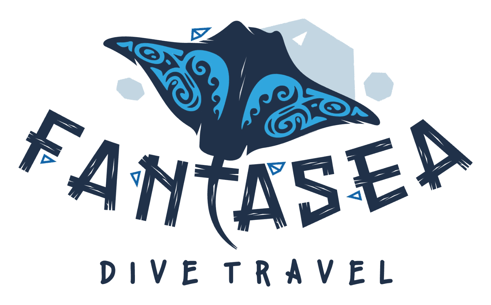
      
    </div>
    <div>
      <span class="aksen">Pedoman Identitas Merek · Edisi 1 · November 2026</span>
      <h1>Live the <span>Fantasea.</span></h1>
      <p class="lead">Fantasea Dive Travel merancang perjalanan selam di Raja Ampat, dari penjemputan di bandara sampai titik selam terakhir. Pedoman ini menjaga agar setiap unggahan, brosur, kaos, dan halaman web terasa datang dari satu perjalanan yang sama.</p>
      <ol class="daftar-isi">
        <li><a href="#esensi">Esensi</a></li>
        <li><a href="#jalur-manta">Jalur Manta</a></li>
        <li><a href="#logo">Logo</a></li>
        <li><a href="#warna">Warna</a></li>
        <li><a href="#tipografi">Tipografi</a></li>
        <li><a href="#elemen">Elemen Grafis</a></li>
        <li><a href="#fotografi">Fotografi</a></li>
        <li><a href="#suara">Suara</a></li>
        <li><a href="#sosial">Media Sosial</a></li>
        <li><a href="#website">Website</a></li>
        <li><a href="#penerapan">Penerapan</a></li>
        <li><a href="#berkas">Berkas</a></li>
      </ol>
    </div>
  </div>
</header>

<main>
<!-- 01 ESENSI -->
<section class="bab" id="esensi">
  <div class="wadah">
    <div class="kepala-bab"><span class="nomor">01</span><span class="aksen">Siapa kami</span><h2>Esensi merek</h2></div>
    <div class="prosa">
      <p>Fantasea Dive Travel adalah penyelenggara perjalanan selam dan snorkeling di Raja Ampat. Tamu cukup datang ke Sorong. Fantasea yang mengatur kapal, penginapan, makan, pemandu, alat, dan urutan titik selam, sehingga setiap hari di air terasa mulus.</p>
      <p>Namanya gabungan <em>fantasy</em> dan <em>sea</em>. Raja Ampat memang terlihat seperti khayalan: pulau karst hijau, air sebening kaca, dan pari manta yang lewat di atas kepala. Bedanya, semua itu nyata, dan Fantasea yang membawa tamu ke sana.</p>
    </div>

    <h3 class="sub">Pernyataan posisi</h3>
    <p class="kutipan">Bagi penyelam yang ingin melihat laut terkaya di dunia tanpa repot mengatur sendiri, Fantasea adalah teman perjalanan lokal yang mengurus semuanya dari bandara sampai titik selam. Yang tersisa untuk tamu hanya rasa takjub.</p>
    <p class="pudar kecil">Pegangan internal untuk menulis dan memilih gambar. Bukan slogan.</p>

    <h3 class="sub">Kepribadian</h3>
    <div class="grid g4">
      <div class="kartu"><span class="aksen">Ceria</span><h3>Senang, tidak norak</h3><p class="kecil">Bahasa ringan dan hangat, seperti teman yang sudah tidak sabar mengajak menyelam. Satu lelucon kecil boleh, tiga tanda seru jangan.</p></div>
      <div class="kartu"><span class="aksen">Bertualang</span><h3>Selalu ada tujuan berikutnya</h3><p class="kecil">Bicara dengan nama tempat, rute, dan jarak. Tamu harus bisa membayangkan perjalanannya dari satu unggahan.</p></div>
      <div class="kartu"><span class="aksen">Teliti</span><h3>Aman dulu, baru seru</h3><p class="kecil">Jadwal, harga, kuota, dan aturan selam ditulis jelas. Kesan santai tidak boleh membuat tamu ragu soal keselamatan.</p></div>
      <div class="kartu"><span class="aksen">Lokal</span><h3>Tuan rumah, bukan agen</h3><p class="kecil">Menghormati kampung, adat, dan aturan kawasan konservasi. Menyebut pemandu dan warga yang terlibat.</p></div>
    </div>

    <h3 class="sub">Penulisan nama</h3>
    <div class="gulir">
      <table>
        <thead><tr><th>Pemakaian</th><th>Tulis sebagai</th></tr></thead>
        <tbody>
          <tr><td>Nama lengkap, judul, dokumen resmi</td><td><strong>Fantasea Dive Travel</strong></td></tr>
          <tr><td>Nama pendek dalam kalimat</td><td><strong>Fantasea</strong></td></tr>
          <tr><td>Hindari</td><td class="pudar">FantaSea · Fanta Sea · Fantasia · Fantasy Dive · FDT</td></tr>
          <tr><td>Handle media sosial (usulan, cek ketersediaan)</td><td><strong>@fantaseadivetravel</strong></td></tr>
        </tbody>
      </table>
    </div>
  </div>
</section>

<!-- 02 JALUR MANTA -->
<section class="bab" id="jalur-manta">
  <div class="wadah">
    <div class="kepala-bab"><span class="nomor">02</span><span class="aksen">Ide besar</span><h2>Jalur Manta</h2></div>
    <div class="prosa">
      <p>Di logo, manta melayang di atas nama Fantasea dan ekornya turun menjadi huruf T. Ekor itu adalah garis. Di sekelilingnya tersebar segitiga kecil dan bidang bersegi, seperti titik dan pulau di peta.</p>
      <p>Dari situ lahir ide besar merek ini: <strong>setiap trip adalah satu jalur</strong>. Manta meninggalkan Garis Ekor dari bandara ke dermaga, dari pulau ke titik selam. Tanda Arah menandai setiap perhentian. Pulau Segi menjadi tempat dan bingkai. Ukir Sayap membawa cerita dan rasa kampung. Semua materi Fantasea dibangun dari empat unsur ini.</p>
    </div>

    <h3 class="sub">Contoh jalur</h3>
    <div class="peta" role="img" aria-label="Diagram Jalur Manta: Sorong, Waisai, Arborek, Manta Sandy, dihubungkan Garis Ekor dengan Tanda Arah di setiap perhentian">
      <svg viewBox="0 0 960 300" aria-hidden="true">
        <path d="M150 56 L232 46 L262 92 L250 140 L196 158 L150 130 Z" fill="#FFFFFF" fill-opacity=".07"/>
        <path d="M560 190 L640 176 L690 214 L676 268 L604 284 L556 248 Z" fill="#FFFFFF" fill-opacity=".07"/>
        <path d="M800 40 L860 34 L892 70 L880 112 L828 120 L798 88 Z" fill="#FFFFFF" fill-opacity=".07"/>
        <path d="M70 200 C 200 214, 250 108, 360 118 C 470 128, 480 230, 600 222 C 720 214, 760 96, 880 80" fill="none" stroke="#30A6DE" stroke-width="5" stroke-linecap="round"/>
        <path d="M880 80 C 900 77, 918 74, 936 70" fill="none" stroke="#30A6DE" stroke-width="2" stroke-linecap="round"/>
        <g fill="#30A6DE" fill-rule="evenodd">
          <path transform="translate(54 182)" d="M0 0 L36 18 L0 36 Z M8 10 L8 26 L22 18 Z"/>
          <path transform="translate(346 98) rotate(8)" d="M0 0 L36 18 L0 36 Z M8 10 L8 26 L22 18 Z"/>
          <path transform="translate(584 204) rotate(-6)" d="M0 0 L36 18 L0 36 Z M8 10 L8 26 L22 18 Z"/>
          <path transform="translate(864 60) rotate(-12)" d="M0 0 L36 18 L0 36 Z M8 10 L8 26 L22 18 Z"/>
        </g>
        <text class="lbl" x="44" y="252">Sorong</text>
        <text class="lbl-kecil" x="44" y="272">Bandara · dijemput</text>
        <text class="lbl" x="318" y="80">Waisai</text>
        <text class="lbl-kecil" x="318" y="60">Kapal cepat ± 2 jam</text>
        <text class="lbl" x="560" y="272">Arborek</text>
        <text class="lbl-kecil" x="660" y="272">Homestay tepi pantai</text>
        <text class="lbl" x="770" y="146">Manta Sandy</text>
        <text class="lbl-kecil" x="770" y="166">Titik selam · pari manta</text>
      </svg>
    </div>
    <p class="pudar kecil" style="margin-top:10px">Diagram skematik, bukan peta berskala. Waktu tempuh adalah contoh.</p>

    <h3 class="sub">Empat unsur</h3>
    <div class="grid g4">
      <div class="kartu"><span class="aksen">Garis Ekor</span><p class="kecil">Rute dan alur. Pemisah bagian, garis bawah judul, garis rute di peta dan jadwal.</p></div>
      <div class="kartu"><span class="aksen">Tanda Arah</span><p class="kecil">Perhentian dan penanda. Butir daftar, titik di peta, aksen kecil di sudut desain.</p></div>
      <div class="kartu"><span class="aksen">Pulau Segi</span><p class="kecil">Tempat dan bingkai. Bidang di belakang foto, judul, atau harga.</p></div>
      <div class="kartu"><span class="aksen">Ukir Sayap</span><p class="kecil">Cerita dan rasa lokal. Tekstur samar di latar gelap, motif kaos dan kemasan.</p></div>
    </div>
  </div>
</section>

<!-- 03 LOGO -->
<section class="bab" id="logo">
  <div class="wadah">
    <div class="kepala-bab"><span class="nomor">03</span><span class="aksen">Manta di atas nama</span><h2>Logo</h2></div>

    <div class="anatomi">
      <div class="peta-logo">
        
        <span class="pin" style="left:52%;top:20%">1</span>
        <span class="pin" style="left:30%;top:16%">2</span>
        <span class="pin" style="left:16%;top:47%">3</span>
        <span class="pin" style="left:44%;top:72%">4</span>
        <span class="pin" style="left:50%;top:7%">5</span>
        <span class="pin" style="left:80%;top:22%">6</span>
        <span class="pin" style="left:85%;top:90%">7</span>
      </div>
      <ol>
        <li><span><strong>Manta.</strong> Penjelajah yang tenang dan anggun. Ikon Raja Ampat yang paling dicari penyelam.</span></li>
        <li><span><strong>Ukir Sayap.</strong> Pola ukir pusaran ombak dan spiral di kedua sayap. Rasa tangan manusia dan budaya pesisir.</span></li>
        <li><span><strong>Huruf papan kayu.</strong> FANTASEA disusun dari bilah kayu yang diikat, seperti rakit dan dermaga kampung. Melengkung seperti senyum.</span></li>
        <li><span><strong>Ekor menjadi T.</strong> Ekor manta turun menembus nama dan menjadi huruf T. Asal Garis Ekor.</span></li>
        <li><span><strong>Tanda Arah.</strong> Segitiga kecil biru yang tersebar seperti titik tujuan di peta.</span></li>
        <li><span><strong>Pulau Segi.</strong> Bidang bersegi Kabut Karang di belakang manta, seperti pulau dilihat dari udara.</span></li>
        <li><span><strong>DIVE TRAVEL.</strong> Tulisan tangan kapital berjarak lebar. Gaya ini menjadi label aksen di seluruh materi.</span></li>
      </ol>
    </div>

    <h3 class="sub">Versi logo</h3>
    <div class="grid g3">
      <figure style="margin:0"><div class="ubin putih"></div><figcaption class="keterangan"><strong>Utama</strong><span>Latar putih atau terang. Pilihan pertama untuk semua materi.</span></figcaption></figure>
      <figure style="margin:0"><div class="ubin malam"></div><figcaption class="keterangan"><strong>Latar gelap</strong><span>Manta dan huruf putih, ukir tetap biru. Untuk Laut Malam, Navy Manta, dan foto gelap.</span></figcaption></figure>
      <figure style="margin:0"><div class="ubin buih">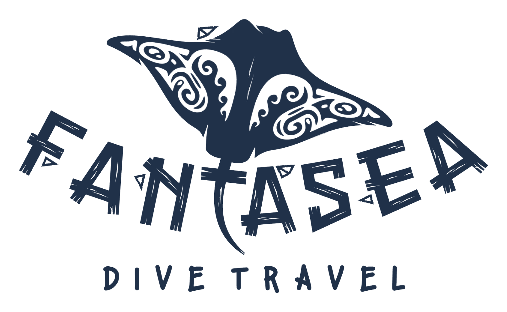</div><figcaption class="keterangan"><strong>Satu warna navy</strong><span>Sablon satu warna, stempel, faks, cetak hitam putih (ganti navy dengan hitam).</span></figcaption></figure>
      <figure style="margin:0"><div class="ubin ukir"></div><figcaption class="keterangan"><strong>Satu warna putih</strong><span>Kaos gelap, bordir, di atas Biru Ukir atau foto. Pola ukir menjadi lubang.</span></figcaption></figure>
      <figure style="margin:0"><div class="ubin putih">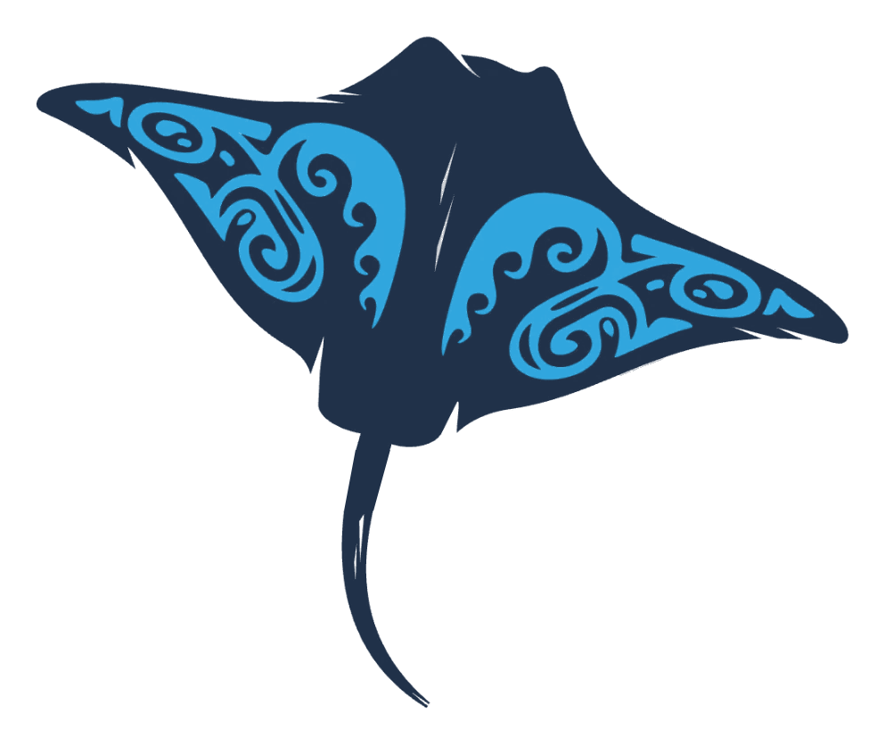</div><figcaption class="keterangan"><strong>Tanda manta</strong><span>Tanpa tulisan. Untuk ruang kecil, sudut template, cap air, dan stiker.</span></figcaption></figure>
      <figure style="margin:0"><div class="ubin malam">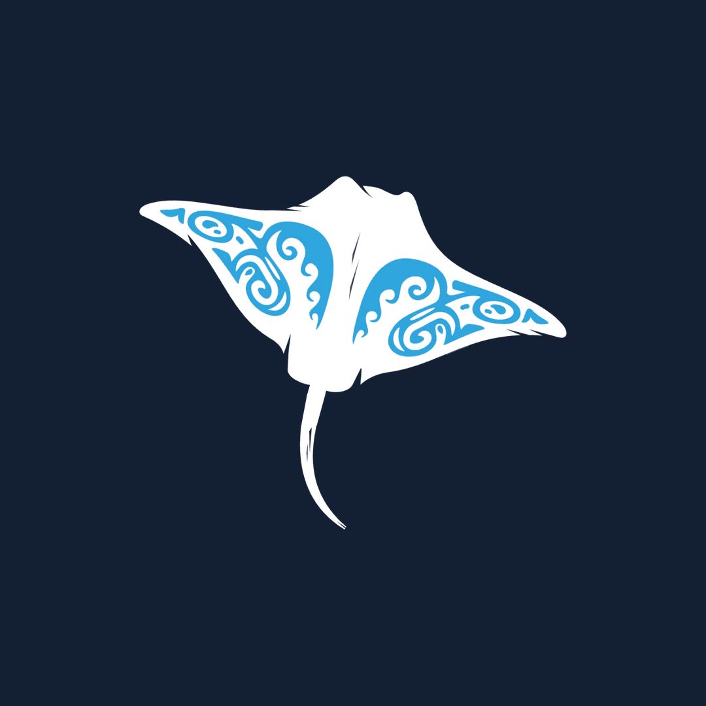</div><figcaption class="keterangan"><strong>Foto profil</strong><span>Tanda manta di atas Laut Malam. Aman dipotong lingkaran.</span></figcaption></figure>
    </div>

    <h3 class="sub">Ruang bebas dan ukuran minimum</h3>
    <div class="grid g2">
      <div class="ruang">
        <div class="bingkai">
          
          <span class="x" style="left:2%;top:46%">x</span><span class="x" style="right:2%;top:46%">x</span>
          <span class="x" style="left:49%;top:0">x</span><span class="x" style="left:49%;bottom:0">x</span>
        </div>
      </div>
      <div class="prosa">
        <p><strong>x = tinggi huruf DIVE TRAVEL.</strong> Kosongkan jarak sebesar x di keempat sisi logo. Tidak boleh ada teks, tepi foto, atau elemen lain di dalam garis putus-putus.</p>
        <div class="ukuran-min">
          <figure><figcaption>Logo lengkap · 160 px · 40 mm</figcaption></figure>
          <figure><figcaption>Tanda manta · 40 px · 10 mm</figcaption></figure>
          <figure><figcaption>Favikon · 16–32 px</figcaption></figure>
        </div>
        <p class="kecil pudar">Di bawah 160 px tulisan DIVE TRAVEL tidak terbaca lagi, jadi ganti ke tanda manta. Di bawah 40 px pola ukir hilang; pakai favikon siluet.</p>
      </div>
    </div>

    <h3 class="sub">Yang tidak boleh</h3>
    <div class="grid g4 salah">
      <figure style="margin:0"><div class="ubin putih"></div><figcaption class="keterangan"><span>Meregangkan atau memampatkan.</span></figcaption></figure>
      <figure style="margin:0"><div class="ubin putih"></div><figcaption class="keterangan"><span>Memiringkan. Lengkung nama sudah cukup bergerak.</span></figcaption></figure>
      <figure style="margin:0"><div class="ubin putih"></div><figcaption class="keterangan"><span>Mengganti warna ukir atau manta.</span></figcaption></figure>
      <figure style="margin:0"><div class="ubin navy"></div><figcaption class="keterangan"><span>Logo utama di latar navy. Manta tenggelam; pakai versi latar gelap.</span></figcaption></figure>
      <figure style="margin:0"><div class="ubin putih"></div><figcaption class="keterangan"><span>Memberi bayangan, garis tepi, atau efek.</span></figcaption></figure>
      <figure style="margin:0"><div class="ubin foto"></div><figcaption class="keterangan"><span>Logo gelap di atas foto ramai tanpa bidang polos.</span></figcaption></figure>
      <figure style="margin:0"><div class="ubin putih"><span style="font-family:var(--f-judul);font-weight:900;font-size:2.6rem;color:#203149;letter-spacing:.06em">FANTASEA</span></div><figcaption class="keterangan"><span>Mengetik ulang nama dengan huruf lain sebagai pengganti logo.</span></figcaption></figure>
      <figure style="margin:0"><div class="ubin putih"><span style="position:absolute;font-family:var(--f-aksen);font-size:1.3rem;color:#203149;letter-spacing:.2em;transform:translate(40px,30px)">DIVE TRAVEL</span></div><figcaption class="keterangan"><span>Menyusun ulang manta dan tulisan.</span></figcaption></figure>
    </div>
  </div>
</section>

<!-- 04 WARNA -->
<section class="bab" id="warna">
  <div class="wadah">
    <div class="kepala-bab"><span class="nomor">04</span><span class="aksen">Dibaca langsung dari logo</span><h2>Warna</h2></div>

    <h3 class="sub">Warna inti</h3>
    <div class="grid g5">
      <div class="swatch"><div class="blok" style="background:#203149;color:#fff">Badan manta</div><div class="data"><strong>Navy Manta</strong><button class="salin" type="button" data-salin="#203149">#203149</button><span class="kode">RGB 32 49 73 · CMYK 56 33 0 71</span><span class="pudar">Teks utama, tulisan logo, latar gelap.</span></div></div>
      <div class="swatch"><div class="blok" style="background:#30A6DE;color:#131F33">Pola ukir</div><div class="data"><strong>Biru Ukir</strong><button class="salin" type="button" data-salin="#30A6DE">#30A6DE</button><span class="kode">RGB 48 166 222 · CMYK 78 25 0 13</span><span class="pudar">Aksen khas. Grafis dan teks di latar gelap.</span></div></div>
      <div class="swatch"><div class="blok" style="background:#1264A8;color:#fff">Segitiga</div><div class="data"><strong>Biru Tanda</strong><button class="salin" type="button" data-salin="#1264A8">#1264A8</button><span class="kode">RGB 18 100 168 · CMYK 89 40 0 34</span><span class="pudar">Tanda Arah, tautan, tombol biru.</span></div></div>
      <div class="swatch"><div class="blok" style="background:#C3D6E2;color:#203149">Bidang segi</div><div class="data"><strong>Kabut Karang</strong><button class="salin" type="button" data-salin="#C3D6E2">#C3D6E2</button><span class="kode">RGB 195 214 226 · CMYK 14 5 0 11</span><span class="pudar">Pulau Segi, latar lembut.</span></div></div>
      <div class="swatch"><div class="blok" style="background:#FFFFFF;color:#203149;border-bottom:1px solid #D5E2EA">Ruang</div><div class="data"><strong>Putih Buih</strong><button class="salin" type="button" data-salin="#FFFFFF">#FFFFFF</button><span class="kode">RGB 255 255 255 · CMYK 0 0 0 0</span><span class="pudar">Latar utama. Beri napas.</span></div></div>
    </div>

    <h3 class="sub">Warna pendamping</h3>
    <div class="grid g3">
      <div class="swatch"><div class="blok" style="background:#131F33;color:#C3D6E2;height:110px">Laut dalam</div><div class="data"><strong>Laut Malam</strong><button class="salin" type="button" data-salin="#131F33">#131F33</button><span class="pudar">Latar paling gelap: story, footer, foto profil.</span></div></div>
      <div class="swatch"><div class="blok" style="background:#EEF5F9;color:#203149;height:110px">Panel</div><div class="data"><strong>Buih</strong><button class="salin" type="button" data-salin="#EEF5F9">#EEF5F9</button><span class="pudar">Latar panel dan kartu di layar.</span></div></div>
      <div class="swatch"><div class="blok" style="background:#FF8A5C;color:#203149;height:110px">Ajakan</div><div class="data"><strong>Koral Senja</strong><button class="salin" type="button" data-salin="#FF8A5C">#FF8A5C</button><span class="pudar">Hanya untuk tombol pesan, harga, dan sisa kursi. Teks di atasnya selalu navy.</span></div></div>
    </div>
    <p class="pudar kecil" style="margin-top:14px">Nilai CMYK adalah titik awal. Minta percetakan membuat contoh cetak sebelum produksi besar.</p>

    <h3 class="sub">Proporsi</h3>
    <div class="proporsi" role="img" aria-label="Proporsi warna: putih 50 persen, navy 25, kabut 12, biru ukir 8, biru tanda 3, koral 2">
      <div style="flex:50;background:#fff;color:#203149">Putih 50</div>
      <div style="flex:25;background:#203149;color:#fff">Navy 25</div>
      <div style="flex:12;background:#C3D6E2;color:#203149">Kabut 12</div>
      <div style="flex:8;background:#30A6DE;color:#131F33">Ukir 8</div>
      <div style="flex:3;background:#1264A8"></div>
      <div style="flex:2;background:#FF8A5C"></div>
    </div>
    <p class="kecil pudar" style="margin-top:10px">Biru Tanda dan Koral Senja dipakai sedikit saja. Koral yang terlalu banyak menghilangkan fungsinya sebagai penunjuk tombol pesan.</p>

    <h3 class="sub">Pasangan teks yang lolos keterbacaan</h3>
    <div class="gulir">
      <table class="kontras">
        <thead><tr><th>Contoh</th><th>Rasio</th><th>Pakai untuk</th></tr></thead>
        <tbody>
          <tr><td><span class="contoh-kontras" style="background:#fff;color:#203149;box-shadow:inset 0 0 0 1px #D5E2EA">Pesan trip</span></td><td>13,2 : 1</td><td>Semua ukuran teks</td></tr>
          <tr><td><span class="contoh-kontras" style="background:#131F33;color:#fff">Pesan trip</span></td><td>16,5 : 1</td><td>Semua ukuran teks</td></tr>
          <tr><td><span class="contoh-kontras" style="background:#203149;color:#30A6DE">Pesan trip</span></td><td>4,8 : 1</td><td>Label, judul, angka di latar navy</td></tr>
          <tr><td><span class="contoh-kontras" style="background:#fff;color:#1264A8;box-shadow:inset 0 0 0 1px #D5E2EA">Pesan trip</span></td><td>6,2 : 1</td><td>Tautan dan teks biru di atas putih</td></tr>
          <tr><td><span class="contoh-kontras" style="background:#FF8A5C;color:#203149">Pesan trip</span></td><td>5,7 : 1</td><td>Tombol pesan, label harga</td></tr>
          <tr><td><span class="contoh-kontras" style="background:#fff;color:#30A6DE;box-shadow:inset 0 0 0 1px #D5E2EA">Pesan trip</span></td><td>2,8 : 1</td><td><strong>Tidak untuk teks.</strong> Biru Ukir di atas putih hanya untuk grafis dan judul sangat besar</td></tr>
          <tr><td><span class="contoh-kontras" style="background:#FF8A5C;color:#fff">Pesan trip</span></td><td>2,3 : 1</td><td><strong>Jangan.</strong> Teks putih di atas koral tidak terbaca di bawah terik matahari</td></tr>
        </tbody>
      </table>
    </div>
  </div>
</section>

<!-- 05 TIPOGRAFI -->
<section class="bab" id="tipografi">
  <div class="wadah">
    <div class="kepala-bab"><span class="nomor">05</span><span class="aksen">Gratis di Google Fonts</span><h2>Tipografi</h2></div>
    <div class="grid" style="gap:18px">
      <div class="spesimen">
        <div><span class="aksen">Judul</span><p class="besar" style="font-family:var(--f-judul);font-weight:900">Londrina Solid</p></div>
        <div><p class="abjad" style="font-family:var(--f-judul);font-weight:900;font-size:1.6rem">ABCDEFGHIJKLM abcdefghijklm 0123456789</p><p class="kecil pudar" style="margin-top:10px">Huruf tebal dengan tepi seperti dipotong tangan, senada dengan huruf papan kayu FANTASEA. Berat 900 untuk judul, harga, dan tanggal; 400 untuk subjudul. Jangan untuk paragraf.</p></div>
      </div>
      <div class="spesimen">
        <div><span class="aksen">Aksen</span><p class="besar" style="font-family:var(--f-aksen);font-size:clamp(2.4rem,7vw,4.4rem)">Gochi Hand</p></div>
        <div><p class="abjad" style="font-family:var(--f-aksen);text-transform:uppercase;letter-spacing:.2em;font-size:1.4rem">Dive travel · Raja Ampat</p><p class="kecil pudar" style="margin-top:10px">Tulisan tangan yang mengulang gaya DIVE TRAVEL di logo. Selalu kapital dengan spasi huruf lebar (0,18–0,2 em). Hanya untuk label pendek, paling banyak lima kata: nama rubrik, nama tempat, keterangan kecil.</p></div>
      </div>
      <div class="spesimen">
        <div><span class="aksen">Teks isi</span><p class="besar" style="font-family:var(--f-isi);font-weight:800;font-size:clamp(2.4rem,7vw,4.4rem)">Nunito</p></div>
        <div><p class="abjad" style="font-family:var(--f-isi)">ABCDEFGHIJKLM abcdefghijklm 0123456789<br><em>Mobula alfredi · Reef manta ray</em></p><p class="kecil pudar" style="margin-top:10px">Sans bulat yang ramah dan jelas di layar ponsel. Berat 400 untuk isi, 700–800 untuk penekanan dan tombol. Miring untuk nama ilmiah dan kalimat bahasa Inggris di tengah teks Indonesia.</p></div>
      </div>
    </div>

    <h3 class="sub">Hierarki</h3>
    <div class="hirarki">
      <div class="baris"><span>H1 · Londrina 900</span><span style="font-family:var(--f-judul);font-weight:900;font-size:clamp(2.2rem,6vw,3.6rem);line-height:1">Raja Ampat Dive Escape</span></div>
      <div class="baris"><span>H2 · Londrina 900</span><span style="font-family:var(--f-judul);font-weight:900;font-size:1.8rem;line-height:1.1">Jadwal open trip bulan ini</span></div>
      <div class="baris"><span>Label · Gochi Hand</span><span style="font-family:var(--f-aksen);text-transform:uppercase;letter-spacing:.2em;color:var(--sorot)">Waisai ▸ Arborek ▸ Manta Sandy</span></div>
      <div class="baris"><span>Isi · Nunito 400</span><span>Kapal berangkat dari dermaga Waisai pukul 07.30 WIT. Dua kali selam pagi di Selat Dampier, makan siang di Arborek, lalu satu selam sore.</span></div>
      <div class="baris"><span>Tombol · Nunito 800</span><span><span class="tombol tombol-pesan">Pesan sekarang</span></span></div>
    </div>
    <p class="kecil pudar" style="margin-top:14px">Di Canva, cari ketiganya dengan nama yang sama. Bila tidak ada, unggah berkas TTF dari <code>brand/font/desktop</code> (Canva Pro) atau pakai pengganti: Londrina Solid → Bebas Neue, Gochi Hand → Patrick Hand, Nunito → Quicksand.</p>
  </div>
</section>

<!-- 06 ELEMEN GRAFIS -->
<section class="bab" id="elemen">
  <div class="wadah">
    <div class="kepala-bab"><span class="nomor">06</span><span class="aksen">Perangkat visual</span><h2>Elemen grafis</h2></div>
    <div class="grid g3">
      <div class="kartu elemen"><div class="gambar">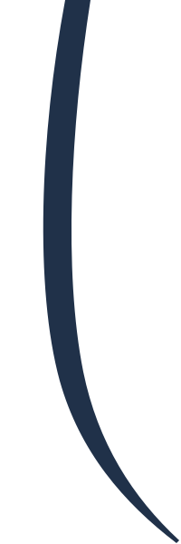</div><h3>Garis Ekor</h3><p class="kecil">Ekor manta yang meruncing. Untuk garis rute, pemisah bagian, dan garis bawah judul. Selalu meruncing ke satu arah, tidak pernah putus-putus kecuali menandai rute kapal.</p></div>
      <div class="kartu elemen"><div class="gambar" style="display:flex;gap:28px;justify-content:center;align-items:center"></div><h3>Tanda Arah</h3><p class="kecil">Segitiga bergaris tebal dari logo, polos atau belah. Butir daftar, titik di peta, aksen sudut. Paling banyak enam per desain, sedikit diputar agar terasa ditebar tangan.</p></div>
      <div class="kartu elemen"><div class="gambar">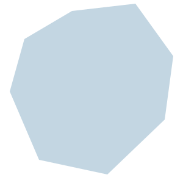</div><h3>Pulau Segi</h3><p class="kecil">Bidang bersegi tujuh atau delapan, tidak simetris. Kabut Karang di latar terang, putih 6–12% di latar gelap. Untuk bingkai foto, harga, dan latar judul.</p></div>
      <div class="kartu elemen"><div class="gambar gelap-bg"></div><h3>Ukir Sayap</h3><p class="kecil">Pola ukir yang diambil langsung dari sayap manta. Tekstur samar (opasitas 5–12%) di latar gelap, motif kaos, kertas pembungkus. Jangan diwarnai selain putih atau Biru Ukir.</p></div>
      <div class="kartu elemen"><div class="gambar" style="background:#203149 url(grafis/pola-jalur-gelap.svg) 0 0 / 180px"></div><h3>Pola Jalur</h3><p class="kecil">Ubin berulang Pulau Segi dan Tanda Arah. Versi terang untuk kertas dan stiker, versi gelap untuk latar web, lanyard, dan kaos.</p></div>
      <div class="kartu elemen"><div class="gambar"><svg viewBox="0 0 220 120" width="220" height="120" aria-hidden="true"><path d="M10 90 C 60 96, 80 40, 120 44 C 160 48, 170 90, 210 30" fill="none" stroke="#30A6DE" stroke-width="4" stroke-linecap="round" stroke-dasharray="1 10"/><g fill="#1264A8" fill-rule="evenodd"><path transform="translate(2 80)" d="M0 0 L22 10 L0 20 Z M5 6 L5 14 L13 10 Z"/><path transform="translate(112 34)" d="M0 0 L22 10 L0 20 Z M5 6 L5 14 L13 10 Z"/><path transform="translate(198 20) rotate(-30)" d="M0 0 L22 10 L0 20 Z M5 6 L5 14 L13 10 Z"/></g></svg></div><h3>Rute kapal</h3><p class="kecil">Satu-satunya garis putus-putus: titik bulat Biru Ukir untuk perjalanan kapal di peta dan jadwal, dengan Tanda Arah di setiap perhentian.</p></div>
    </div>

    <h3 class="sub">Ikon garis</h3>
    <div class="ikon-baris">
      <figure><svg viewBox="0 0 24 24" aria-hidden="true"><path d="M2.5 14.5h19l-2.6 4.3H5.1z"/><path d="M7 14.5V10h6.6l3 4.5"/><path d="M10.3 10V6.5"/><path d="M2 21.5c1.7 0 1.7-1 3.3-1s1.7 1 3.4 1 1.6-1 3.3-1 1.7 1 3.3 1 1.7-1 3.4-1 1.6 1 3.3 1"/></svg>Trip</figure>
      <figure><svg viewBox="0 0 24 24" aria-hidden="true"><path d="M3 9.5C3 8.1 4.1 7 5.5 7h11c1.4 0 2.5 1.1 2.5 2.5v3c0 1.7-1.3 3-3 3h-1.8c-.8 0-1.6-.5-2-1.2l-.4-.8c-.4-.8-1.6-.8-2 0l-.4.8c-.4.7-1.2 1.2-2 1.2H6c-1.7 0-3-1.3-3-3z"/><path d="M21.5 4v10.5a5 5 0 0 1-5 5H14"/></svg>Titik Selam</figure>
      <figure><svg viewBox="0 0 24 24" aria-hidden="true"><rect x="3.5" y="5.5" width="17" height="15" rx="2.5"/><path d="M3.5 10h17"/><path d="M8 3v5M16 3v5"/><path d="M8 14h2M14 14h2M8 17h2"/></svg>Jadwal</figure>
      <figure><svg viewBox="0 0 24 24" aria-hidden="true"><path d="M12 3.5l2.6 5.3 5.9.9-4.2 4.1 1 5.8L12 16.9l-5.3 2.7 1-5.8-4.2-4.1 5.9-.9z"/></svg>Ulasan</figure>
      <figure><svg viewBox="0 0 24 24" aria-hidden="true"><circle cx="12" cy="12" r="9"/><path d="M12 11v5.5"/><path d="M12 7.6v.2"/></svg>Info</figure>
      <figure><svg viewBox="0 0 24 24" aria-hidden="true"><path d="M3.5 8.5h3.2l1.6-2.5h7.4l1.6 2.5h3.2v11h-17z"/><circle cx="12" cy="13.8" r="3.4"/></svg>Galeri</figure>
    </div>
    <p class="kecil pudar" style="margin-top:12px">Grid 24, garis 1,7, ujung dan sudut membulat. Ikon baru mengikuti aturan yang sama. Berkas SVG ada di <code>brand/grafis/ikon</code>.</p>
  </div>
</section>

<!-- 07 FOTOGRAFI -->
<section class="bab" id="fotografi">
  <div class="wadah">
    <div class="kepala-bab"><span class="nomor">07</span><span class="aksen">Laut apa adanya</span><h2>Fotografi</h2></div>
    <div class="grid g3">
      <figure class="contoh-foto">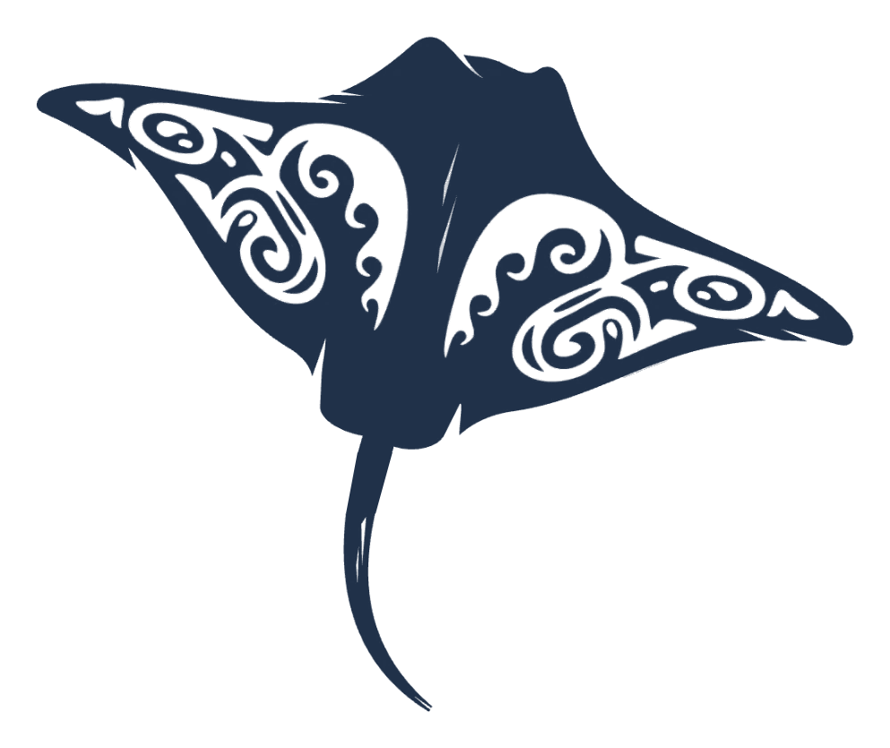<figcaption>Bawah air: sejajar mata satwa, cahaya dari atas</figcaption></figure>
      <figure class="contoh-foto atas-air"><div class="pulau"></div><figcaption>Di atas air: pulau, kapal, dermaga, langit</figcaption></figure>
      <figure class="contoh-foto senja"><figcaption>Manusia: tamu dan kru tertawa di kapal, senja di Arborek</figcaption></figure>
    </div>
    <p class="kecil pudar" style="margin-top:10px">Bingkai di atas adalah ilustrasi arah, bukan foto. Ganti dengan foto milik Fantasea.</p>
    <div class="grid g2" style="margin-top:28px">
      <div class="kartu"><h3>Lakukan</h3>
        <ul class="boleh kecil">
          <li>Pakai foto sendiri dari trip nyata, dengan nama fotografer atau pemandu di keterangan.</li>
          <li>Koreksi biru dengan white balance agar warna karang tetap alami.</li>
          <li>Tunjukkan skala: penyelam di samping manta, kapal kecil di antara pulau karst.</li>
          <li>Seimbangkan feed: satu foto bawah air, satu di atas air, satu wajah.</li>
          <li>Minta izin sebelum memotret tamu dan warga kampung.</li>
        </ul>
      </div>
      <div class="kartu"><h3>Hindari</h3>
        <ul class="jangan-li kecil">
          <li>Foto stok atau foto orang lain tanpa izin dan kredit.</li>
          <li>Filter hijau, ungu, atau saturasi berlebihan yang membuat laut terlihat palsu.</li>
          <li>Penyelam yang menyentuh, mengejar, atau berdiri di atas karang dan satwa.</li>
          <li>Logo besar di tengah foto. Taruh tanda manta kecil di sudut.</li>
        </ul>
      </div>
    </div>
  </div>
</section>

<!-- 08 SUARA -->
<section class="bab" id="suara">
  <div class="wadah">
    <div class="kepala-bab"><span class="nomor">08</span><span class="aksen">Cara kami bicara</span><h2>Suara dan bahasa</h2></div>
    <div class="grid g2">
      <div class="kartu" style="background:var(--malam);color:#E8F0F6;border-color:var(--malam)">
        <span class="aksen">Tagline utama</span>
        <p style="font-family:var(--f-judul);font-weight:900;font-size:clamp(2.6rem,7vw,4rem);line-height:.95;margin-top:6px">Live the <span style="color:#30A6DE">Fantasea.</span></p>
        <p style="margin-top:14px;color:#C3D6E2">Pendamping bahasa Indonesia: <strong style="color:#fff">Laut nyata, melampaui khayalan.</strong></p>
      </div>
      <div class="kartu">
        <span class="aksen">Baris pendukung</span>
        <ul class="tanda-li">
          <li><strong>Dari bandara sampai titik selam, kami yang atur.</strong> <span class="pudar kecil">Profil, brosur, website</span></li>
          <li><strong>Your route to the reef.</strong> <span class="pudar kecil">Iklan untuk tamu mancanegara</span></li>
          <li><strong>Satu kursi lagi, satu cerita lagi.</strong> <span class="pudar kecil">Story slot terakhir</span></li>
          <li><strong>Lihat. Jaga jarak. Takjub.</strong> <span class="pudar kecil">Etika menyelam dengan manta</span></li>
        </ul>
      </div>
    </div>

    <h3 class="sub">Contoh kalimat</h3>
    <div class="gulir">
      <table>
        <thead><tr><th>Begini</th><th>Bukan begini</th></tr></thead>
        <tbody>
          <tr><td>Open trip 12–15 Desember tinggal 2 kursi. Sudah termasuk jemput di Sorong, kapal, homestay, dan 8 kali selam.</td><td class="pudar">PROMO GILA!!! Buruan sebelum kehabisan 🔥🔥🔥</td></tr>
          <tr><td>Pagi ini empat pari manta datang ke Manta Sandy. Kami menunggu di 15 meter, menjaga jarak, dan membiarkan mereka yang mendekat.</td><td class="pudar">Dijamin pasti ketemu manta setiap selam!</td></tr>
          <tr><td>Arus di Cape Kri sedang kuat. Trip ini cocok untuk penyelam Advanced dengan minimal 30 kali selam.</td><td class="pudar">Semua bisa ikut, gampang kok!</td></tr>
          <tr><td>Terima kasih, warga Arborek, sudah menyambut tamu kami di dermaga sore ini.</td><td class="pudar">Tempatnya terpencil tapi lumayan.</td></tr>
        </tbody>
      </table>
    </div>

    <h3 class="sub">Aturan bahasa</h3>
    <div class="grid g2">
      <ul class="tanda-li">
        <li><strong>Dua bahasa.</strong> Caption bahasa Indonesia, lalu satu atau dua kalimat bahasa Inggris di bawahnya. Paket dan harga untuk tamu asing boleh bahasa Inggris saja.</li>
        <li><strong>Sebut tempat.</strong> Waisai, Arborek, Kri, Selat Dampier, Piaynemo. Tamu mencari nama tempat, bukan kata sifat.</li>
        <li><strong>Angka jujur.</strong> Harga ditulis dengan apa yang termasuk dan tidak termasuk. Satwa tidak pernah dijamin.</li>
      </ul>
      <ul class="tanda-li">
        <li><strong>Waktu lokal.</strong> Tulis WIT dan format 07.30. Tanggal: 12–15 Desember.</li>
        <li><strong>Emoji secukupnya.</strong> Paling banyak dua per caption, tidak di judul. Yang berfungsi saja: 📍 lokasi, 🐠 satwa.</li>
        <li><strong>Sapa sebagai teman.</strong> Pakai "kamu" untuk media sosial dan "Anda" untuk penawaran resmi dan surel.</li>
      </ul>
    </div>

    <h3 class="sub">Tagar</h3>
    <p style="font-family:var(--f-aksen);font-size:1.25rem;letter-spacing:.06em;line-height:1.8"><strong style="color:var(--sorot)">#LiveTheFantasea</strong> &nbsp;#FantaseaDiveTravel &nbsp;#RajaAmpat &nbsp;#DiveRajaAmpat &nbsp;#MantaRay &nbsp;#WonderfulIndonesia</p>
    <p class="kecil pudar">#LiveTheFantasea wajib di setiap unggahan. Tambah dua sampai empat tagar lain sesuai isi.</p>
  </div>
</section>

<!-- 09 MEDIA SOSIAL -->
<section class="bab" id="sosial">
  <div class="wadah">
    <div class="kepala-bab"><span class="nomor">09</span><span class="aksen">Instagram, Facebook, TikTok</span><h2>Media sosial</h2></div>

    <h3 class="sub">Lima pilar konten</h3>
    <div class="gulir">
      <table>
        <thead><tr><th>Pilar</th><th>Isi</th><th>Template</th></tr></thead>
        <tbody>
          <tr><td><strong>Paket Trip</strong></td><td>Satu paket per unggahan: durasi, jumlah selam, yang termasuk, harga mulai.</td><td>Feed 02</td></tr>
          <tr><td><strong>Titik Selam</strong></td><td>Satu titik selam: lokasi, kedalaman, arus, level, satwa utama.</td><td>Feed 03</td></tr>
          <tr><td><strong>Jadwal Open Trip</strong></td><td>Tanggal keberangkatan dan sisa kursi. Diperbarui setiap awal bulan.</td><td>Feed 04, Story 06</td></tr>
          <tr><td><strong>Kata Tamu</strong></td><td>Kutipan ulasan asli dari Google atau TripAdvisor, dengan izin tamu.</td><td>Feed 05</td></tr>
          <tr><td><strong>Di Kapal</strong></td><td>Video pendek dan foto hari itu: kru, pemandu, kampung, momen lucu.</td><td>Foto dengan tanda manta di sudut</td></tr>
        </tbody>
      </table>
    </div>

    <h3 class="sub">Ritme mingguan</h3>
    <div class="ritme">
      <div><b>Sen</b>Jadwal Open Trip</div>
      <div><b>Sel</b>Story dari kapal</div>
      <div><b>Rab</b>Titik Selam</div>
      <div><b>Kam</b>Reels Di Kapal</div>
      <div><b>Jum</b>Paket Trip</div>
      <div><b>Sab</b>Story dari kapal</div>
      <div><b>Min</b>Kata Tamu</div>
    </div>
    <p class="kecil pudar" style="margin-top:10px">Empat unggahan feed per pekan, story setiap hari ada trip. Slot terakhir boleh diunggah kapan saja.</p>

    <h3 class="sub">Template</h3>
    <div class="feed-grid">
      <figure>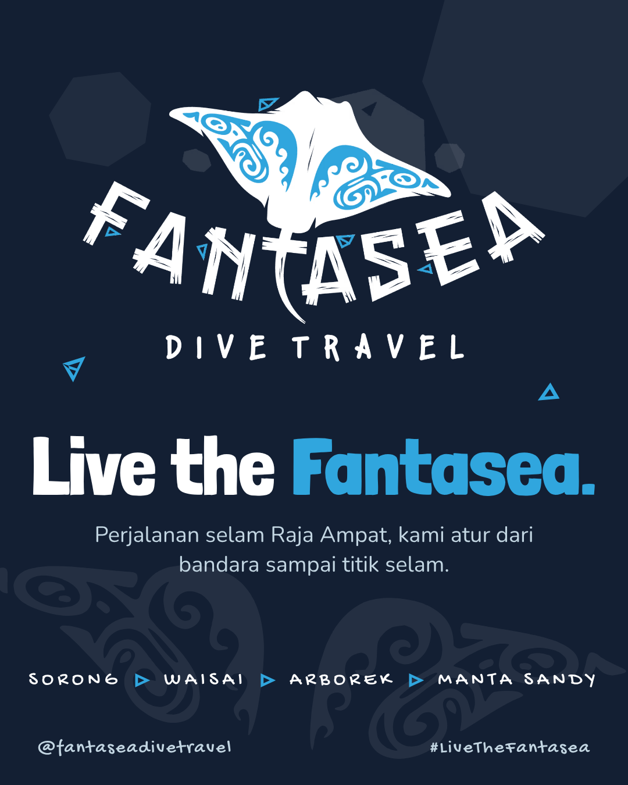<figcaption><strong>01 · Perkenalan</strong>Unggahan pertama dan pin profil</figcaption></figure>
      <figure>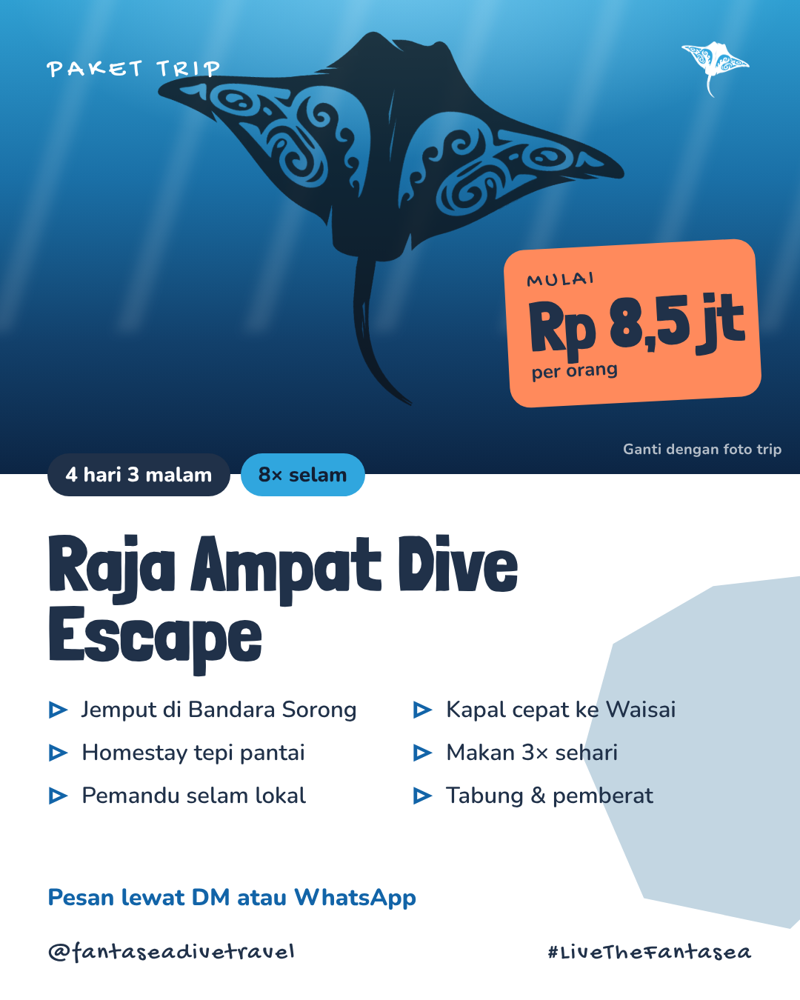<figcaption><strong>02 · Paket Trip</strong>Feed 4:5. Harga di stiker koral</figcaption></figure>
      <figure>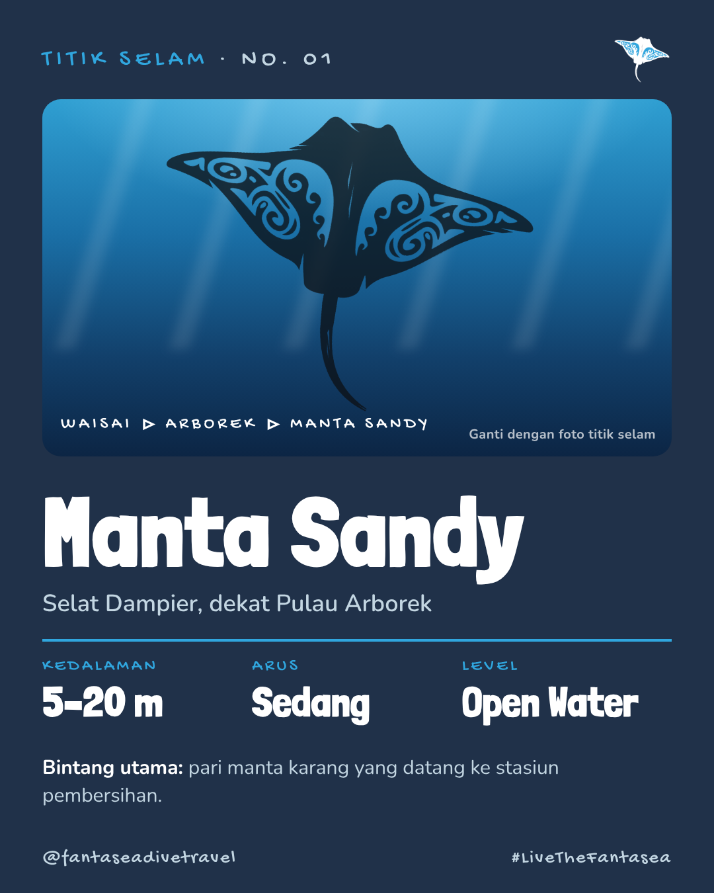<figcaption><strong>03 · Titik Selam</strong>Feed 4:5. Rute kecil di atas foto</figcaption></figure>
      <figure>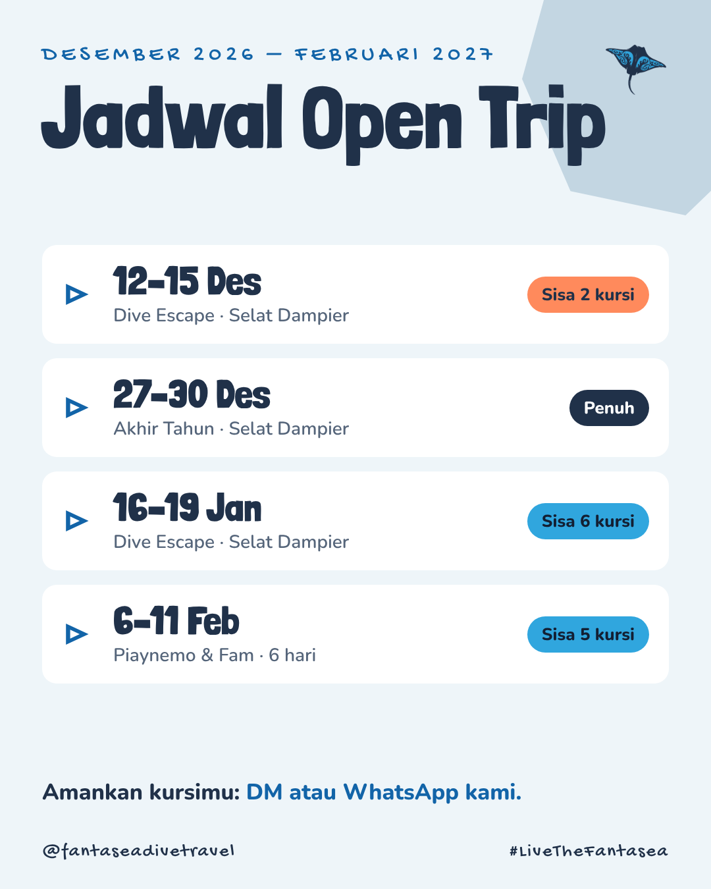<figcaption><strong>04 · Jadwal Open Trip</strong>Koral jika sisa 1–3 kursi, navy jika penuh</figcaption></figure>
      <figure>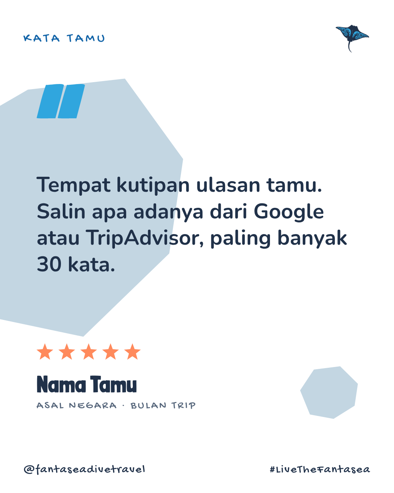<figcaption><strong>05 · Kata Tamu</strong>Hanya kutipan asli dengan izin</figcaption></figure>
      <figure>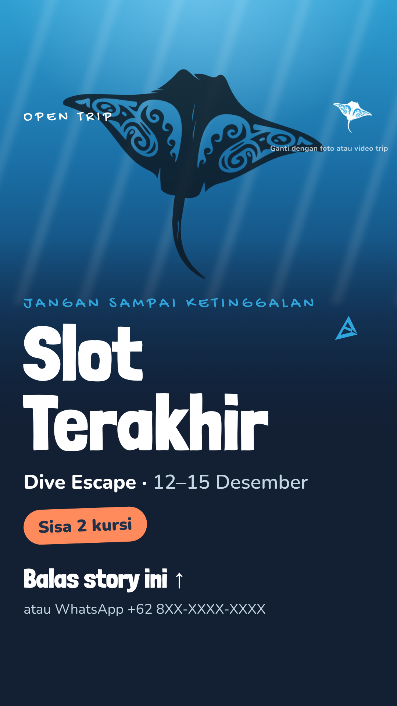<figcaption><strong>06 · Slot Terakhir</strong>Story 9:16. Teks penting di luar 250 px atas dan bawah</figcaption></figure>
    </div>
    <p class="kecil pudar" style="margin-top:12px">Harga, tanggal, kuota, dan nomor di template adalah contoh tata letak. Ganti dengan data asli sebelum diunggah.</p>

    <h3 class="sub">Profil</h3>
    <div class="profil">
      
      <div class="bio">
        <strong>Fantasea Dive Travel</strong><br>
        Trip selam &amp; snorkeling Raja Ampat 🐠<br>
        Sorong ▸ Waisai ▸ titik selam, kami yang atur<br>
        Open trip · private trip · kursus selam<br>
        WhatsApp +62 8XX-XXXX-XXXX · #LiveTheFantasea
      </div>
    </div>
    <div class="sorotan" style="margin-top:18px">
      <figure>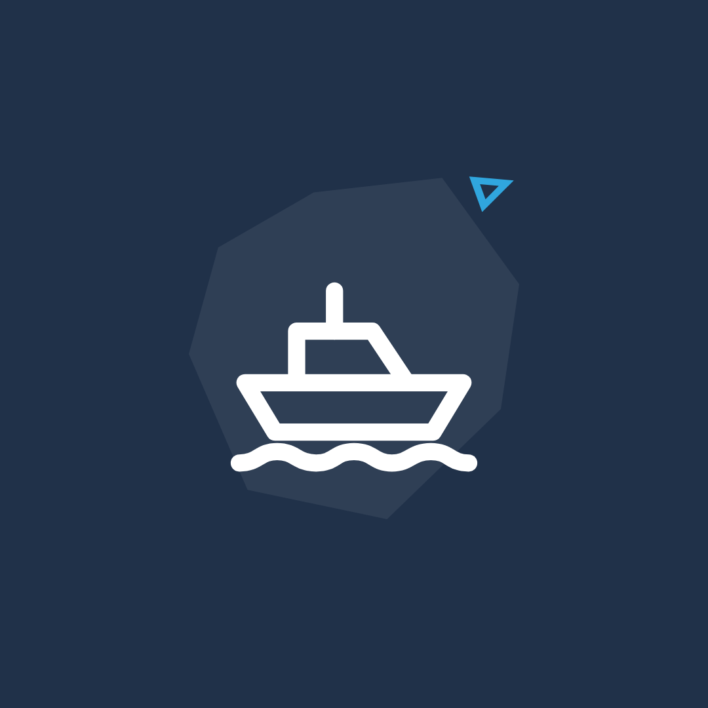Trip</figure>
      <figure>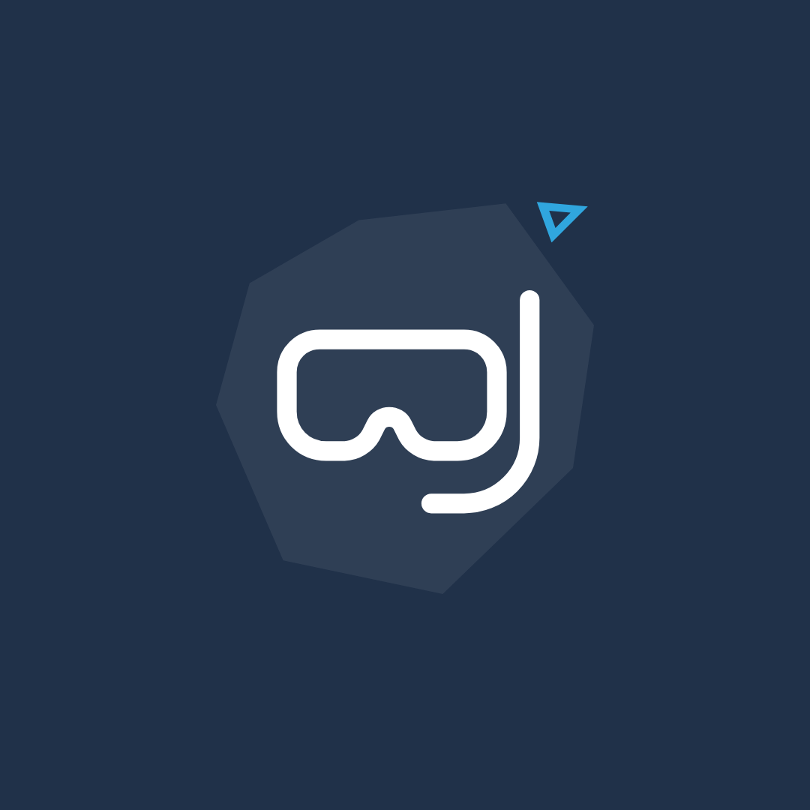Titik Selam</figure>
      <figure>Jadwal</figure>
      <figure>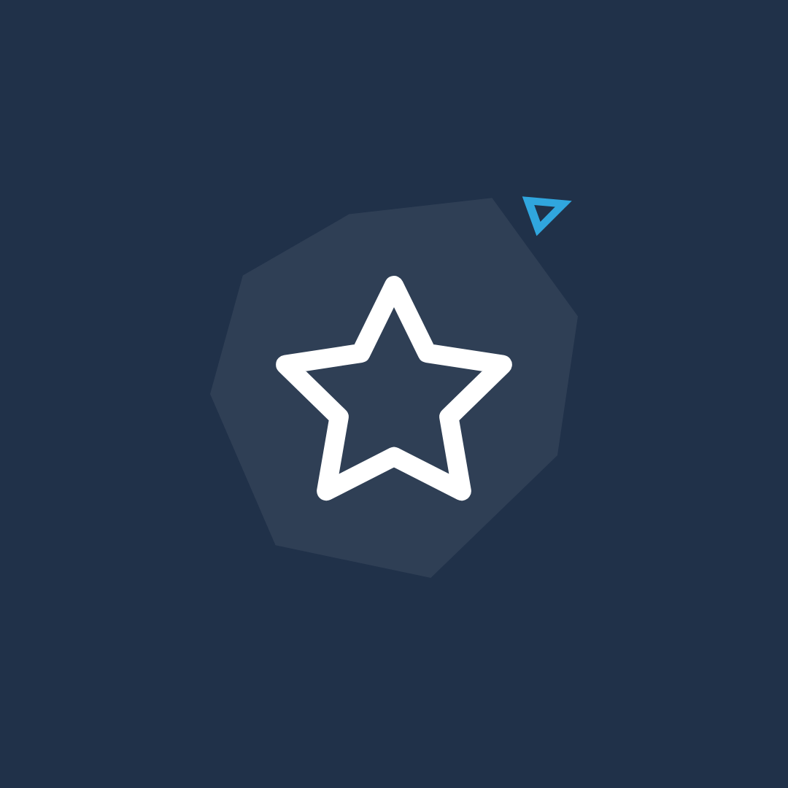Ulasan</figure>
      <figure>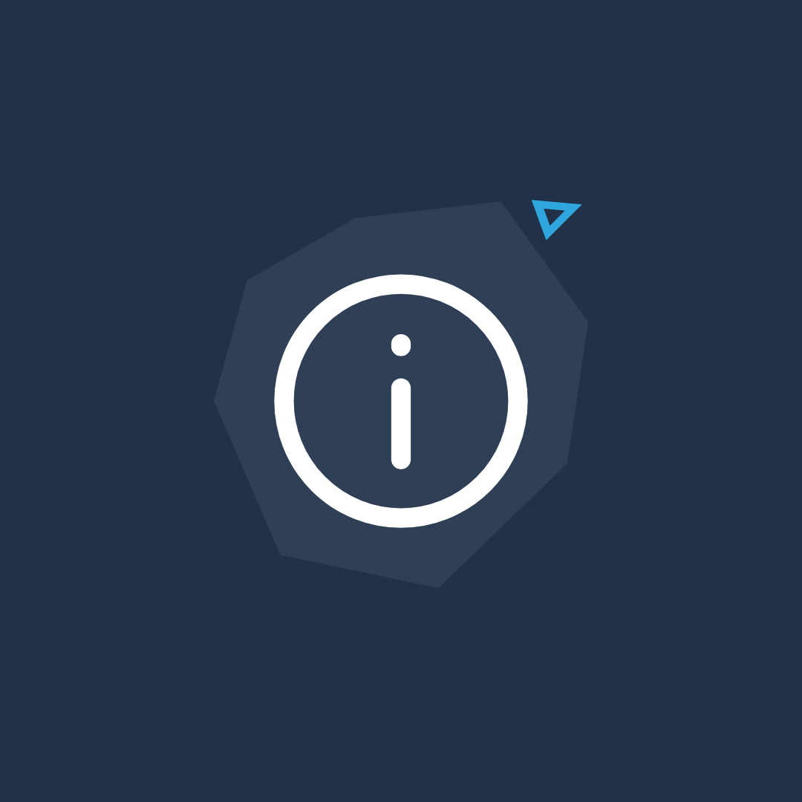Info</figure>
      <figure>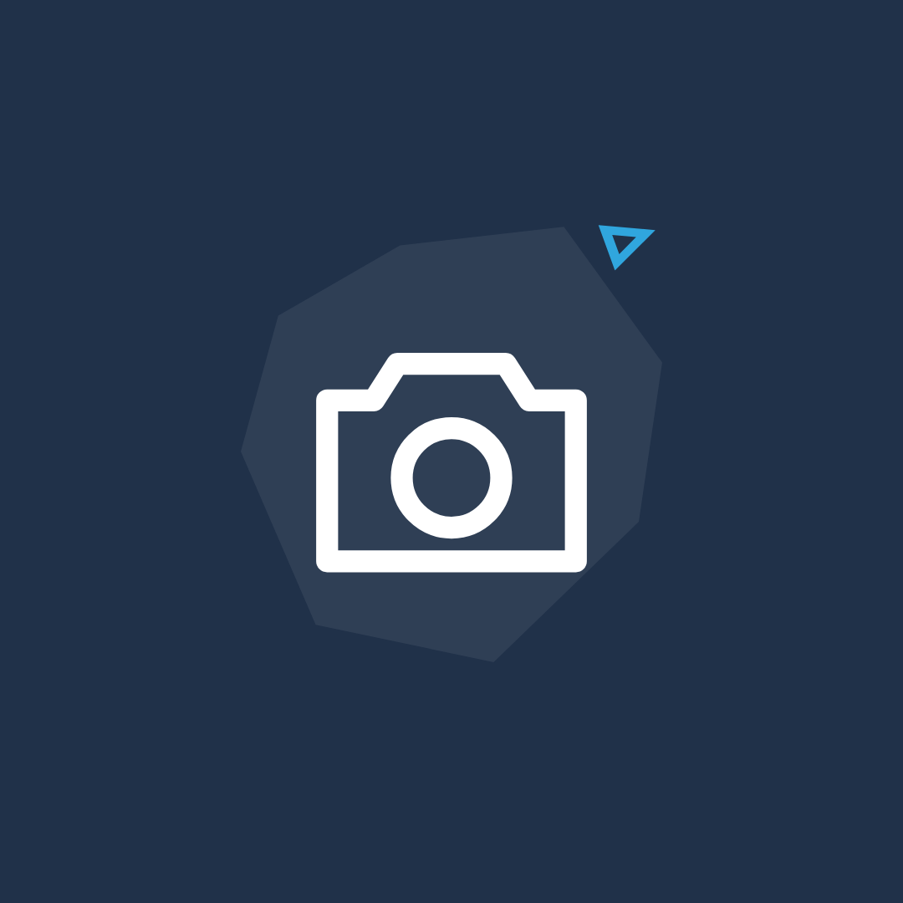Galeri</figure>
    </div>
  </div>
</section>

<!-- 10 WEBSITE -->
<section class="bab" id="website">
  <div class="wadah">
    <div class="kepala-bab"><span class="nomor">10</span><span class="aksen">Komponen dasar</span><h2>Website</h2></div>
    <div class="contoh-web">
      <div class="nav">
        
        <ul><li>Trip</li><li>Titik Selam</li><li>Jadwal</li><li>Tentang</li></ul>
        <span class="tombol tombol-pesan">Pesan trip</span>
      </div>
      <div class="hero-web">
        
        <span class="aksen" style="color:#30A6DE;position:relative">Raja Ampat · Selat Dampier</span>
        <h3>Live the <span>Fantasea.</span></h3>
        <p>Trip selam dari Sorong sampai titik selam. Kapal, homestay, makan, pemandu, dan alat sudah kami atur.</p>
        <div class="aksi"><span class="tombol tombol-pesan">Lihat jadwal open trip</span><span class="tombol tombol-garis" style="color:#fff">Tanya lewat WhatsApp</span></div>
      </div>
      <div class="kartu-trip-wadah">
        <article class="kartu-trip"><div class="ft"><span class="label label-koral">Sisa 2 kursi</span></div><div class="isi"><span class="meta">4 hari 3 malam · 8× selam</span><h4>Raja Ampat Dive Escape</h4><div class="bawah"><span class="harga"><small>Mulai</small>Rp 8,5 jt</span><span class="tombol tombol-biru" style="min-height:40px">Detail</span></div></div></article>
        <article class="kartu-trip"><div class="ft"><span class="label">Open trip</span></div><div class="isi"><span class="meta">6 hari 5 malam · 12× selam</span><h4>Piaynemo &amp; Fam</h4><div class="bawah"><span class="harga"><small>Mulai</small>Rp 13,9 jt</span><span class="tombol tombol-biru" style="min-height:40px">Detail</span></div></div></article>
        <article class="kartu-trip"><div class="ft"><span class="label label-gelap">Private</span></div><div class="isi"><span class="meta">Atur sendiri tanggalnya</span><h4>Private Dive Trip</h4><div class="bawah"><span class="harga"><small>Harga</small>Sesuai rute</span><span class="tombol tombol-biru" style="min-height:40px">Tanya</span></div></div></article>
      </div>
    </div>
    <p class="kecil pudar" style="margin-top:12px">Contoh tata letak. Nama paket dan harga adalah isian contoh.</p>

    <div class="grid g2" style="margin-top:28px">
      <div>
        <h3 class="sub" style="margin-top:0">Aturan tombol</h3>
        <ul class="tanda-li">
          <li><strong>Koral Senja</strong> hanya untuk satu ajakan utama per layar: pesan, lihat jadwal.</li>
          <li><strong>Biru Tanda</strong> untuk aksi kedua: detail, kirim, lanjut.</li>
          <li><strong>Garis</strong> untuk aksi ketiga dan tombol di atas foto.</li>
          <li>Tinggi minimal 48 px, sudut pil, huruf Nunito 800. Fokus keyboard memakai cincin Biru Ukir.</li>
        </ul>
      </div>
      <div>
        <h3 class="sub" style="margin-top:0">Memakai token</h3>
<pre class="kode">&lt;link rel="stylesheet" href="/font/web/fonts.css"&gt;
&lt;link rel="stylesheet" href="/token/tokens.css"&gt;

&lt;a class="tombol tombol-pesan"&gt;Pesan trip&lt;/a&gt;
&lt;ul class="daftar-tanda"&gt;…&lt;/ul&gt;

color: var(--navy);
background: var(--buih);
font-family: var(--f-judul);</pre>
      </div>
    </div>
  </div>
</section>

<!-- 11 PENERAPAN -->
<section class="bab" id="penerapan">
  <div class="wadah">
    <div class="kepala-bab"><span class="nomor">11</span><span class="aksen">Di dunia nyata</span><h2>Penerapan</h2></div>
    <div class="penerapan">
      <div class="panggung">
        <div class="kartu-nama depan"></div>
        <div class="kartu-nama belakang">
          <div><div class="nm">Nama Pemilik</div><div class="jb">Trip Manager</div></div>
          <div class="kt">+62 8XX-XXXX-XXXX<br>halo@fantaseadivetravel.com<br>Waisai, Raja Ampat</div>
          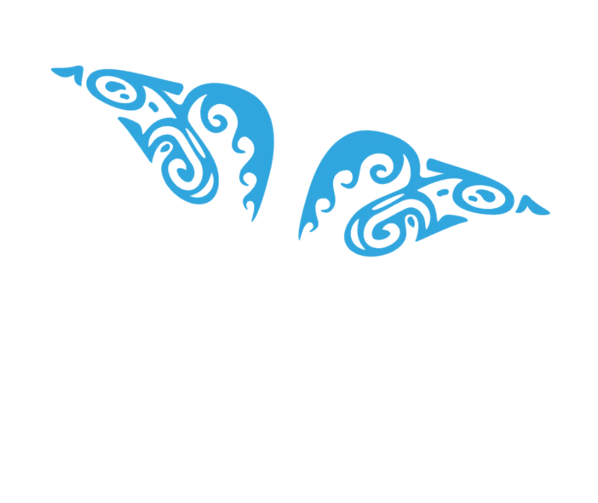
        </div>
        <p class="kecil pudar">Kartu nama 90 × 55 mm. Depan putih, belakang Navy Manta.</p>
      </div>
      <div class="panggung">
        <div class="label-koper">
          
          <div class="isian"><span>Nama</span><span>Trip &amp; tanggal</span><span>Kamar</span></div>
          <div class="tg">Live the Fantasea.</div>
        </div>
        <p class="kecil pudar">Label koper untuk tamu. Diberikan saat dijemput di Sorong.</p>
      </div>
      <div class="panggung kaos">
        <svg viewBox="0 0 300 300" role="img" aria-label="Kaos navy dengan logo putih di dada">
          <path d="M96 26 C112 40 188 40 204 26 L262 52 L290 112 L250 128 L238 108 L238 286 L62 286 L62 108 L50 128 L10 112 L38 52 Z" fill="#203149"/>
          <path d="M112 30 C126 46 174 46 188 30" fill="none" stroke="#131F33" stroke-width="6"/>
          <image href="logo/fantasea-logo-latar-gelap.png" x="104" y="76" width="92" height="57"/>
        </svg>
        <p class="kecil pudar">Kaos kru: logo latar gelap di dada 9 cm, Pola Jalur gelap di punggung.</p>
      </div>
      <div class="panggung">
        <div class="stiker">
          
          <div class="bulat"></div>
        </div>
        <p class="kecil pudar">Stiker potong bentuk dan stiker bulat untuk botol, tabung selam, dan kotak kering.</p>
      </div>
    </div>
  </div>
</section>

<!-- 12 BERKAS -->
<section class="bab" id="berkas">
  <div class="wadah">
    <div class="kepala-bab"><span class="nomor">12</span><span class="aksen">Unduh dan lanjutkan</span><h2>Berkas dan langkah berikutnya</h2></div>
    <div class="gulir">
      <table>
        <thead><tr><th>Folder</th><th>Isi</th></tr></thead>
        <tbody>
          <tr><td><code>logo/svg</code></td><td>Delapan versi logo dan tanda manta dalam vektor. Untuk percetakan, sablon, papan nama, dan desainer.</td></tr>
          <tr><td><code>logo</code></td><td>PNG transparan (utama, latar gelap, navy, putih), tanda manta, foto profil 1080 px, logo asli.</td></tr>
          <tr><td><code>logo/web</code></td><td>Favikon 16/32/48, favicon.ico, apple-touch-icon, ikon aplikasi 192/512 dan maskable.</td></tr>
          <tr><td><code>font</code></td><td>Londrina Solid, Gochi Hand, Nunito: TTF untuk komputer, woff2 dan <code>fonts.css</code> untuk web. Lisensi SIL OFL 1.1.</td></tr>
          <tr><td><code>token</code></td><td><code>tokens.css</code> dan <code>tokens.json</code>: warna, huruf, jarak, tombol, kartu trip.</td></tr>
          <tr><td><code>grafis</code></td><td>Garis Ekor, Tanda Arah, Pulau Segi, Ukir Sayap, Pola Jalur, ikon garis (SVG).</td></tr>
          <tr><td><code>sosial</code></td><td>Template HTML, PNG siap unggah, dan skrip <code>render.js</code> untuk membuat ulang PNG.</td></tr>
          <tr><td><code>pedoman-merek.pdf</code></td><td>Buku pedoman ini dalam PDF A4 untuk dicetak atau dikirim.</td></tr>
        </tbody>
      </table>
    </div>

    <h3 class="sub">Yang perlu dilengkapi</h3>
    <div class="grid g2">
      <ul class="tanda-li">
        <li>Nomor WhatsApp, surel, dan alamat kantor. Semua masih tertulis <code>+62 8XX-XXXX-XXXX</code>.</li>
        <li>Handle <code>@fantaseadivetravel</code> dan domain <code>fantaseadivetravel.com</code> masih usulan. Cek ketersediaannya.</li>
        <li>Daftar paket, harga, dan jadwal asli untuk mengganti isian contoh di template.</li>
      </ul>
      <ul class="tanda-li">
        <li>Wilayah operasi diasumsikan Raja Ampat (Sorong, Waisai, Selat Dampier). Ubah bila berbeda.</li>
        <li>Data titik selam (kedalaman, arus, level) di template perlu dicek pemandu.</li>
        <li>File logo vektor asli dari desainer, bila ada. SVG di sini adalah jiplakan rapi dari gambar 2000 px.</li>
      </ul>
    </div>
  </div>
</section>
</main>

<footer class="penutup">
  <div class="wadah">
    <div>
      <p style="font-family:var(--f-judul);font-weight:900;font-size:clamp(2rem,5vw,3rem);color:#fff;line-height:1">Live the <span style="color:#30A6DE">Fantasea.</span></p>
      <p style="margin-top:10px">Pedoman Identitas Merek Fantasea Dive Travel · Edisi 1 · November 2026</p>
    </div>
    
  </div>
</footer>

<script>
  // Klik kode warna untuk menyalin
  document.querySelectorAll('.salin').forEach(function (b) {
    b.addEventListener('click', function () {
      var nilai = b.getAttribute('data-salin');
      var asli = b.textContent;
      function tandai(teks) { b.textContent = teks; setTimeout(function () { b.textContent = asli; }, 1200); }
      try {
        navigator.clipboard.writeText(nilai).then(function () { tandai('Disalin'); }, function () { pilih(); });
      } catch (e) { pilih(); }
      function pilih() {
        var r = document.createRange(); r.selectNodeContents(b);
        var s = window.getSelection(); s.removeAllRanges(); s.addRange(r);
      }
    });
  });
</script>
